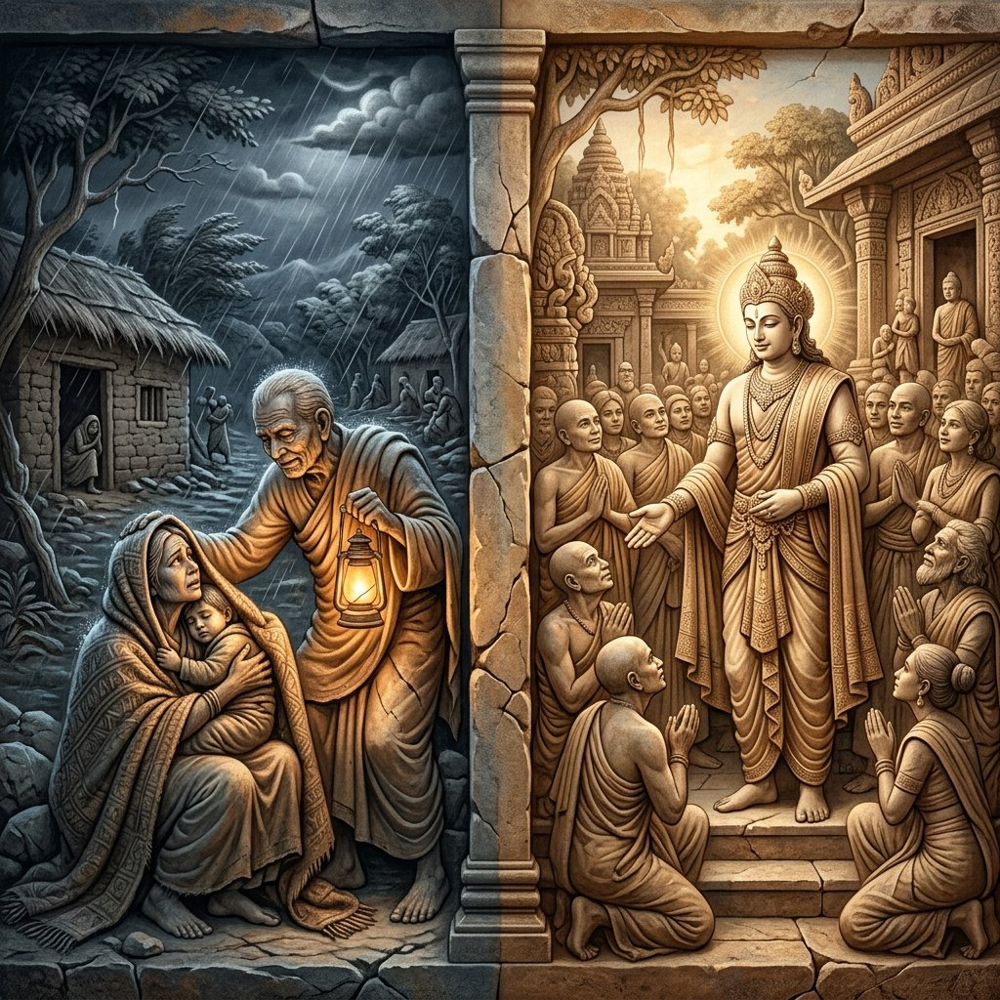
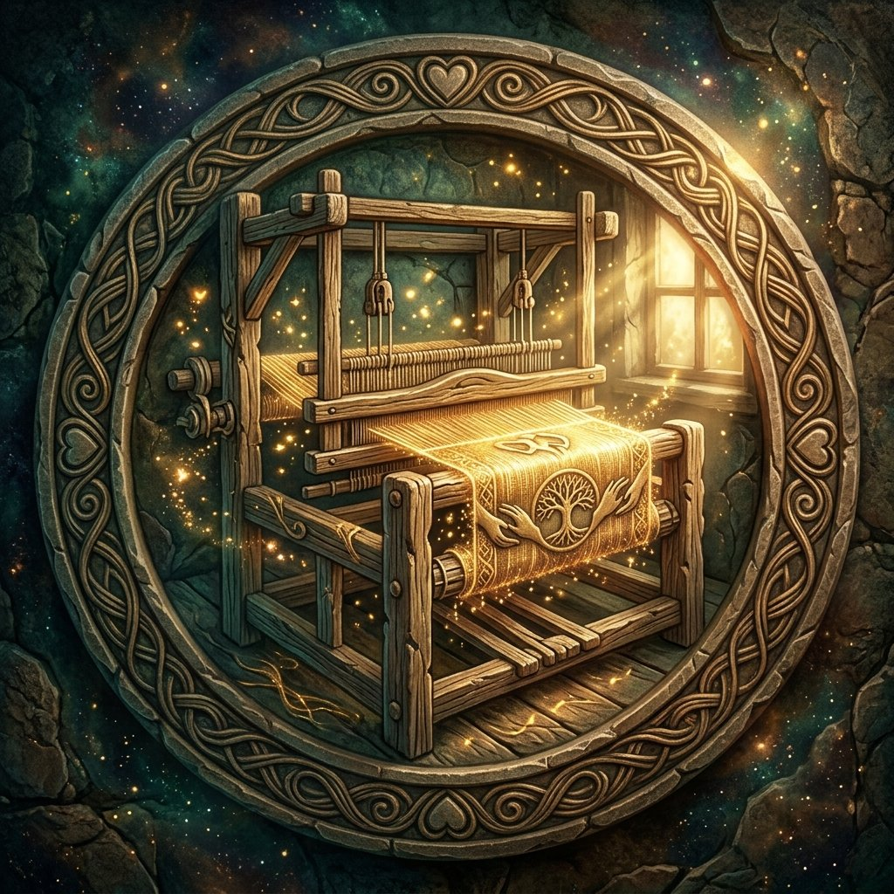
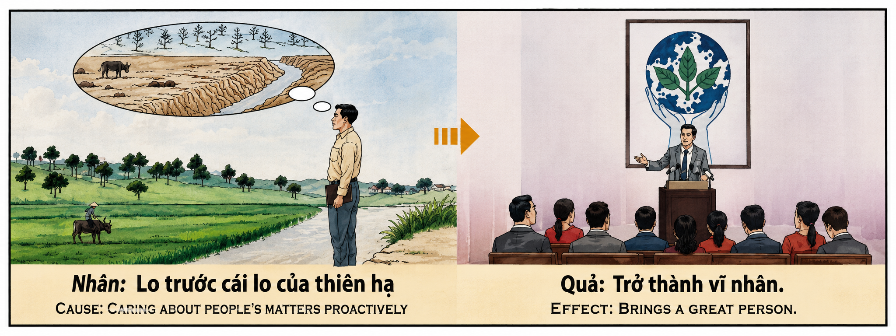

La Nobleza del Corazón y el Amparo Universal The Nobility of Heart and the Universal Shelter La nobiltà del cuore e la protezione universale 心灵的高贵和普遍的保护 نبل القلب والحماية الشاملة Благородство сердца и всеобщая защита Der Adel des Herzens und der universelle Schutz La noblesse du cœur et la protection universelle 心の高貴さと普遍的な保護 A Nobreza do Coração e a Proteção Universal Sự Cao Quý Của Trái Tim Và Sự Che Chở Của Vũ Trụ
"Preocuparse activamente por el bienestar ajeno, cobijar al desamparado y sostener al sufriente no es solo un acto de bondad; es alinearse con la fuerza creadora y sustentadora del cosmos. El alma que expande su corazón para abrazar los dolores del mundo destruye la prisión del ego. Como recompensa, el karma le elevará a una estatura espiritual y social de gran nobleza en sus vidas siguientes, revistiéndola de una autoridad moral incontestable, sabiduría y un aura de paz tan inmensa que todos buscarán refugiarse bajo su sombra protectora." "Actively caring for the well-being of others, sheltering the helpless, and sustaining the suffering is not just an act of kindness; it is aligning with the creative and sustaining force of the cosmos. The soul that expands its heart to embrace the pains of the world destroys the prison of the ego. As a reward, karma will elevate it to a spiritual and social stature of great nobility in its subsequent lives, clothing it with incontestable moral authority, wisdom, and an aura of peace so immense that everyone will seek refuge under its protective shadow." "Prendersi cura attivamente del benessere degli altri, dare rifugio agli indifesi e sostenere i sofferenti non è solo un atto di gentilezza; è allinearsi con la forza creativa e sostenitrice del cosmo. L'anima che espande il suo cuore per abbracciare i dolori del mondo distrugge la prigione dell'ego. Come ricompensa, il karma la eleverà a una statura spirituale e sociale di grande nobiltà nelle sue vite successive, rivestendola di incontestabile autorità morale, saggezza e un'aura di pace così immenso che tutti cercheranno rifugio sotto la sua ombra protettiva." “积极关心他人的福祉、庇护无助者、支持受苦者，不仅是一种仁慈的行为；它使自己与宇宙的创造力和维持力保持一致。扩展心灵以拥抱世界痛苦的灵魂摧毁了自我的监狱。作为奖励，业力将在其来世将其提升到崇高的精神和社会地位，赋予其无可争议的道德权威、智慧和光环。和平如此巨大，以至于每个人都会在其保护荫下寻求庇护。” "إن الاهتمام برفاهية الآخرين وإيواء الضعفاء ودعم المعاناة ليس فقط عملاً من أعمال اللطف، بل إنه مواءمة مع قوة الكون الإبداعية والمستدامة. إن الروح التي توسع قلبها لاحتضان آلام العالم تدمر سجن الأنا. وكمكافأة، سترفعها الكارما إلى مكانة روحية واجتماعية ذات نبل عظيم في حياتها اللاحقة، وتلبسها سلطة أخلاقية وحكمة وأخلاق لا تقبل الجدل. هالة من السلام هائلة لدرجة أن الجميع سيلجأون إلى ظلها الوقائي." «Активная забота о благополучии других, прикрытие беспомощных и поддержка страдающих — это не только акт доброты; это объединение себя с творческой и поддерживающей силой космоса. Душа, которая расширяет свое сердце, чтобы принять боль мира, разрушает тюрьму эго. В награду карма поднимет ее до духовного и социального статуса великого благородства в ее последующих жизнях, облачив ее в неоспоримый моральный авторитет, мудрость и аура мира настолько огромна, что каждый будет искать убежища под ее защитной тенью». „Sich aktiv um das Wohlergehen anderer zu kümmern, die Hilflosen zu beherbergen und die Leidenden zu unterstützen, ist nicht nur ein Akt der Güte; es bedeutet, sich mit der schöpferischen und erhaltenden Kraft des Kosmos in Einklang zu bringen. Die Seele, die ihr Herz erweitert, um die Schmerzen der Welt anzunehmen, zerstört das Gefängnis des Ego. Als Belohnung wird Karma sie in ihren späteren Leben zu einer spirituellen und sozialen Statur von großem Adel erheben und sie mit unbestreitbarer moralischer Autorität, Weisheit und Weisheit ausstatten Die Aura des Friedens ist so gewaltig, dass jeder in ihrem schützenden Schatten Zuflucht suchen wird.“ "Prendre activement soin du bien-être des autres, abriter les impuissants et soutenir ceux qui souffrent n'est pas seulement un acte de bonté ; c'est s'aligner sur la force créatrice et soutenante du cosmos. L'âme qui élargit son cœur pour embrasser les douleurs du monde détruit la prison de l'ego. En récompense, le karma l'élèvera à une stature spirituelle et sociale de grande noblesse dans ses vies ultérieures, la revêtant d'une autorité morale incontestable, d'une sagesse et d'une aura de paix si immense. que chacun cherchera à se réfugier sous son ombre protectrice. » 「他者の幸福を積極的に気遣い、無力な人々を保護し、苦しんでいる人々を支援することは、単なる親切な行為ではありません。それは、宇宙の創造的で維持する力と自分自身を同調させることです。世界の痛みを受け入れるために心を広げる魂は、自我の牢獄を破壊します。報酬として、カルマは、その後の人生において、それを偉大な高貴な精神的および社会的地位に高め、議論の余地のない道徳的権威と知恵を身につけるでしょう。」そして、その平和のオーラは非常に巨大なので、誰もがその保護の影の下に避難しようとするでしょう。」 "Cuidar ativamente do bem-estar dos outros, abrigar os desamparados e apoiar os que sofrem não é apenas um ato de bondade; é alinhar-se com a força criativa e sustentadora do cosmos. A alma que expande seu coração para abraçar as dores do mundo destrói a prisão do ego. Como recompensa, o carma irá elevá-la a uma estatura espiritual e social de grande nobreza em suas vidas subsequentes, revestindo-a de autoridade moral incontestável, sabedoria e uma aura de paz tão imensa que todos procurarão refugiar-se sob sua sombra protetora." "Chủ động quan tâm đến phúc lợi của người khác, che chở kẻ bất hạnh và nâng đỡ người đau khổ không chỉ là hành động tử tế; đó là sự đồng điệu với lực sáng tạo và duy trì của vũ trụ. Linh hồn mở rộng trái tim ôm lấy nỗi đau nhân sinh sẽ đập tan ngục tù bản ngã. Như một phần thưởng, nghiệp quả sẽ nâng họ lên tầm cao tâm linh và xã hội đầy cao quý trong kiếp sau, khoác lên họ uy tín đạo đức tối thượng, trí tuệ và hào quang bình yên bao la khiến vạn vật tự khắc tìm đến nương tựa dưới bóng râm che chở của họ."
Entre las leyes que gobiernan el ascenso del alma hacia su máxima plenitud, la preocupación activa por el bienestar colectivo constituye el sendero real de la evolución kármica. Preocuparse por la gente, conmoverse ante sus dolores y actuar decididamente para aliviar su desamparo no es un mero deber ético; es una transmutación metafísica que opera en múltiples dimensiones de la conciencia humana.
La primera dimensión es psicológica: la disolución absoluta del egoísmo. El ego humano es por naturaleza una prisión estrecha y temerosa, obsesionada con su propia seguridad, acumulación e importancia. Al desviar voluntariamente el faro de nuestra atención y dirigirlo hacia las necesidades ajenas —al dolernos el frío del mendigo, el hambre del huérfano y el desconsuelo de la viuda—, la conciencia se expande. Rompemos las paredes del yo y nos fundimos en el gran océano de la humanidad, purificando nuestra mente de la codicia y el miedo a la escasez.
La segunda dimensión es energética: el alineamiento con la providencia cósmica. La fuerza creativa que sostiene las galaxias y da aliento a la vida es, en su esencia más pura, un flujo incesante de sustento, protección y amor incondicional. Al igual que el sabio agricultor cuida y riega el campo cuando todavía está verde y lozano para que nunca llegue a secarse (tal como ilustra de forma magistral el relieve original del templo en su causa), el alma noble actúa de forma proactiva. No espera a que la tragedia o el sufrimiento consuman por completo al prójimo para reaccionar; se preocupa y ofrece amparo anticipadamente, asegurando que las raíces de la comunidad permanezcan nutridas y protegidas antes del invierno del dolor.
La tercera dimensión es la elevación kármica hacia la verdadera nobleza. En vidas futuras, la retribución de este karma se manifiesta no solo en riquezas materiales, sino en una estatura espiritual y social majestuosa. El alma renace revestida de una autoridad moral natural e incontestable; su sola presencia infunde paz, seguridad y una profunda sabiduría que atrae a las multitudes en busca de guía y consuelo. Se convierte en una «gran persona» (un protector de pueblos o comunidades), porque en el gran libro del destino está escrito que aquel que sirvió de refugio a las almas fatigadas en el pasado, será coronado en el futuro con la corona del honor, el respeto universal y un Ikigai de amparo sagrado.
Among the laws governing the soul's ascent to its highest fulfillment, active concern for collective well-being constitutes the royal highway of karmic evolution. Caring for people, being moved by their griefs, and acting decisively to alleviate their helplessness is not a mere ethical duty; it is a metaphysical transmutation operating across multiple dimensions of human consciousness.
The first dimension is psychological: the absolute dissolution of selfishness. The human ego is by nature a narrow and fearful prison, obsessed with its own safety, accumulation, and self-importance. By voluntarily shifting the beacon of our attention towards the needs of others—by feeling the beggar's cold, the orphan's hunger, and the widow's grief—consciousness expands. We break the walls of the self and merge into the great ocean of humanity, purifying our minds from greed and fear of scarcity.
The second dimension is energetic: alignment with cosmic providence. The creative force sustaining the galaxies and breathing life is, in its purest essence, an unceasing flow of sustenance, protection, and unconditional love. Just as the wise farmer cares for and waters the field while it is still green and flourishing so it never dries up (as masterfully illustrated in the temple's original cause relief), the noble soul acts proactively. They do not wait for tragedy or absolute suffering to consume others before reacting; they care and offer shelter in advance, ensuring that the community's roots remain nourished and protected before the winter of pain arrives.
The third dimension is the karmic elevation towards true nobility. In future lives, the retribution of this karma manifests not only in material wealth, but in a majestic spiritual and social stature. The soul is reborn clothed in a natural and incontestable moral authority; its sole presence instills peace, security, and a profound wisdom attracting multitudes in search of guidance and comfort. They become a "great person" (a protector of peoples or communities), because in the great book of destiny it is written that he who served as a refuge for weary souls in the past, will be crowned in the future with the crown of honor, universal respect, and an Ikigai of sacred shelter.
Tra le leggi che governano l'ascesa dell'anima verso la sua massima pienezza, la preoccupazione attiva per il benessere collettivo costituisce il vero cammino dell'evoluzione karmica. Prendersi cura delle persone, commuoversi davanti al loro dolore e agire con decisione per alleviare la loro impotenza non è un mero dovere etico; È una trasmutazione metafisica che opera in molteplici dimensioni della coscienza umana.
La prima dimensione è psicologica: la dissoluzione assoluta dell'egoismo. L’ego umano è per natura una prigione angusta e spaventosa, ossessionato dalla propria sicurezza, accumulo e importanza. Deviando volontariamente il faro della nostra attenzione e dirigendolo verso i bisogni degli altri – mentre siamo feriti dal freddo del mendicante, dalla fame dell’orfano e dal dolore della vedova – la coscienza si espande. Rompiamo i muri del sé e ci immergiamo nel grande oceano dell'umanità, purificando le nostre menti dall'avidità e dalla paura della scarsità.
La seconda dimensione è energetica: allineamento con la provvidenza cosmica. La forza creativa che sostiene le galassie e respira la vita è, nella sua essenza più pura, un flusso incessante di sostentamento, protezione e amore incondizionato. Proprio come il saggio agricoltore cura e innaffia il campo mentre è ancora verde e rigoglioso in modo che non si secchi mai (come illustra magistralmente il rilievo originale del tempio a sua causa), l'anima nobile agisce in modo proattivo. Non aspetta che la tragedia o la sofferenza consumino completamente il suo prossimo per reagire; Si prende cura e offre riparo in anticipo, assicurando che le radici della comunità rimangano nutrite e protette prima dell’inverno del dolore.
La terza dimensione è l'elevazione karmica verso la vera nobiltà. Nelle vite future, la retribuzione di questo karma si manifesta non solo nella ricchezza materiale, ma in una maestosa statura spirituale e sociale. L'anima rinasce rivestita di un'autorità morale naturale e incontestabile; La sua stessa presenza infonde pace, sicurezza e una profonda saggezza che attira folle in cerca di guida e conforto. Diventa una "grande persona" (un protettore di città o comunità), perché nel grande libro del destino è scritto che colui che nel passato ha servito da rifugio alle anime stanche, sarà incoronato in futuro con la corona dell'onore, del rispetto universale e di un Ikigai di sacra protezione.
在控制灵魂向其最大丰盛提升的法则中，对集体福祉的积极关注构成了业力进化的真正路径。关心他人，被他们的痛苦所感动，并果断采取行动缓解他们的无助，这不仅仅是一种道德义务；它是一种形而上学的嬗变，在人类意识的多个维度中运作。
第一个维度是心理层面：自私的彻底消解。人类的自我本质上是一座狭窄而可怕的监狱，痴迷于自身的安全、积累和重要性。当我们因乞丐的寒冷、孤儿的饥饿和寡妇的悲伤而受到伤害时，通过自愿转移我们注意力的灯塔并将其引向他人的需要，意识就会扩展。我们打破自我的围墙，融入人类的浩瀚海洋，净化我们内心的贪婪和对匮乏的恐惧。
第二个维度是充满活力：与宇宙天意保持一致。维持星系并赋予生命的创造力，其最纯粹的本质是源源不断的供给、保护和无条件的爱。正如明智的农夫在田地还绿油油的时候照料和浇水，使其永远不会干涸（正如他的事业中寺庙的原始浮雕巧妙地说明的那样），高贵的灵魂会积极主动地采取行动。他不会等到悲剧或痛苦彻底吞噬他的邻居才做出反应；它提前关心并提供庇护，确保社区的根基在痛苦的冬天之前得到滋养和保护。
第三个维度是业力提升，走向真正的高贵。在来世，这种业力的果报不仅体现在物质财富上，而且体现在崇高的精神和社会地位上。灵魂重生，披上了自然的、无可争议的道德权威；他的存在给人们注入了和平、安全感和深刻的智慧，吸引着人们寻求指导和安慰。他成为一个“伟人”（城镇或社区的保护者），因为在伟大的命运之书中写道，过去作为疲倦灵魂的避难所的他，将在未来被加冕为荣誉之冠、普遍的尊重和神圣保护的生命贝。
من بين القوانين التي تحكم صعود الروح نحو أقصى كمالها، يشكل الاهتمام النشط بالرفاهية الجماعية المسار الحقيقي لتطور الكارما. إن الاهتمام بالناس، والتأثر بآلامهم، والتصرف بشكل حاسم للتخفيف من عجزهم ليس مجرد واجب أخلاقي؛ إنه تحول ميتافيزيقي يعمل في أبعاد متعددة للوعي الإنساني.
البعد الأول نفسي: الانحلال المطلق للأنانية. النفس البشرية بطبيعتها سجن ضيق ومخيف، مهووس بأمنها وتراكمها وأهميتها. من خلال تحويل منارة انتباهنا طوعًا وتوجيهها نحو احتياجات الآخرين - كما نتألم من برد المتسول، وجوع اليتيم، وحزن الأرملة - يتوسع الوعي. نكسر جدران الذات ونندمج في محيط الإنسانية العظيم، ونطهر عقولنا من الجشع والخوف من الندرة.
البعد الثاني هو النشاط: التوافق مع العناية الكونية. إن القوة الإبداعية التي تدعم المجرات وتبث الحياة هي، في أنقى جوهرها، تدفق مستمر من الدعم والحماية والحب غير المشروط. وكما يعتني المزارع الحكيم بالحقل ويرويه وهو لا يزال أخضرًا ومورقًا بحيث لا يجف أبدًا (كما يوضح ذلك النقش الأصلي للمعبد في قضيته ببراعة)، فإن الروح النبيلة تتصرف بشكل استباقي. إنه لا ينتظر المأساة أو المعاناة لتستهلك جاره بالكامل قبل أن يقوم بالرد؛ إنها تهتم وتوفر المأوى مقدمًا، مما يضمن بقاء جذور المجتمع مغذية ومحمية قبل شتاء الألم.
البعد الثالث هو الارتقاء الكارمي نحو النبل الحقيقي. وفي الحيوات المستقبلية، لا يتجلى عقاب هذه الكارما في الثروة المادية فحسب، بل في المكانة الروحية والاجتماعية المهيبة. تولد النفس من جديد وهي ترتدي سلطة أخلاقية طبيعية لا جدال فيها؛ إن مجرد حضوره يغرس السلام والأمن والحكمة العميقة التي تجذب الحشود بحثًا عن التوجيه والراحة. يصبح "شخصًا عظيمًا" (حاميًا للمدن أو المجتمعات)، لأنه مكتوب في كتاب القدر العظيم أن من كان بمثابة ملجأ للأرواح المنهكة في الماضي، سوف يتوج في المستقبل بتاج الشرف والاحترام العالمي وإيكيغاي من الحماية المقدسة.
Среди законов, управляющих восхождением души к ее максимальной полноте, активная забота о коллективном благополучии составляет реальный путь кармической эволюции. Забота о людях, волнение их болью и решительные действия для облегчения их беспомощности — это не просто этический долг; Это метафизическая трансмутация, которая действует во многих измерениях человеческого сознания.
Первое измерение — психологическое: абсолютное растворение эгоизма. Человеческое эго по своей природе является узкой и пугающей тюрьмой, одержимой собственной безопасностью, накоплением и важностью. Добровольно отвлекая маяк нашего внимания и направляя его на нужды других, — как нас ранит холод нищего, голод сироты и горе вдовы — сознание расширяется. Мы разрушаем стены своего «я» и погружаемся в великий океан человечества, очищая свой разум от жадности и страха нужды.
Второе измерение — энергетическое: соответствие космическому провидению. Творческая сила, поддерживающая галактики и вдыхающая жизнь, в своей чистейшей сути представляет собой непрерывный поток поддержки, защиты и безусловной любви. Подобно тому, как мудрый земледелец ухаживает и поливает поле, пока оно еще зеленое и пышное, чтобы оно никогда не высыхало (как мастерски иллюстрирует оригинальный рельеф храма, посвященный его делу), так и благородная душа действует активно. Он не ждет, пока трагедия или страдание полностью поглотят его соседа, прежде чем отреагировать; Он заботится и заранее предлагает убежище, гарантируя, что корни сообщества будут питаться и защищены перед мучительной зимой.
Третье измерение — это кармическое возвышение к истинному благородству. В будущих жизнях возмездие за эту карму проявляется не только в материальном богатстве, но и в величественном духовном и социальном статусе. Душа возрождается, облаченная в естественный и неоспоримый моральный авторитет; Само его присутствие вселяет мир, безопасность и глубокую мудрость, которая привлекает толпы людей в поисках руководства и утешения. Он становится «великим человеком» (защитником городов или общин), потому что в великой книге судеб написано, что тот, кто в прошлом служил прибежищем для утомленных душ, в будущем будет увенчан венцом почета, всеобщего уважения и икигай священной защиты.
Unter den Gesetzen, die den Aufstieg der Seele zu ihrer maximalen Fülle regeln, stellt die aktive Sorge um das kollektive Wohlergehen den wahren Weg der karmischen Entwicklung dar. Sich um die Menschen zu kümmern, sich von ihrem Schmerz berühren zu lassen und entschlossen zu handeln, um ihre Hilflosigkeit zu lindern, ist keine bloße ethische Pflicht; Es handelt sich um eine metaphysische Transmutation, die in mehreren Dimensionen des menschlichen Bewusstseins wirkt.
Die erste Dimension ist psychologischer Natur: die absolute Auflösung des Egoismus. Das menschliche Ego ist von Natur aus ein enges und ängstliches Gefängnis, besessen von seiner eigenen Sicherheit, Anhäufung und Bedeutung. Indem wir den Leuchtturm unserer Aufmerksamkeit freiwillig ablenken und ihn auf die Bedürfnisse anderer richten – während uns die Kälte des Bettlers, der Hunger des Waisenkindes und die Trauer der Witwe verletzen – weitet sich unser Bewusstsein. Wir durchbrechen die Mauern unseres Selbst und tauchen ein in den großen Ozean der Menschheit, indem wir unseren Geist von Gier und Angst vor Knappheit reinigen.
Die zweite Dimension ist energetisch: Ausrichtung auf die kosmische Vorsehung. Die kreative Kraft, die die Galaxien erhält und Leben einhaucht, ist in ihrer reinsten Essenz ein unaufhörlicher Fluss von Nahrung, Schutz und bedingungsloser Liebe. So wie der weise Bauer das Feld pflegt und bewässert, solange es noch grün und üppig ist, damit es nie austrocknet (wie das ursprüngliche Relief des Tempels in seiner Sache meisterhaft veranschaulicht), handelt die edle Seele proaktiv. Er wartet nicht darauf, dass eine Tragödie oder ein Leid seinen Nächsten völlig verschlingt, bevor er reagiert; Es kümmert sich im Voraus und bietet Schutz, um sicherzustellen, dass die Wurzeln der Gemeinschaft vor dem Winter der Schmerzen genährt und geschützt bleiben.
Die dritte Dimension ist die karmische Erhebung zum wahren Adel. In zukünftigen Leben manifestiert sich die Vergeltung dieses Karmas nicht nur in materiellem Reichtum, sondern auch in majestätischer spiritueller und sozialer Statur. Die Seele wird mit einer natürlichen und unbestreitbaren moralischen Autorität wiedergeboren; Seine bloße Anwesenheit vermittelt Frieden, Sicherheit und eine tiefe Weisheit, die Menschenmengen auf der Suche nach Führung und Trost anzieht. Er wird zu einer „großen Person“ (einem Beschützer von Städten oder Gemeinden), denn im großen Buch des Schicksals steht geschrieben, dass derjenige, der in der Vergangenheit als Zufluchtsort für müde Seelen diente, in Zukunft mit der Krone der Ehre, des universellen Respekts und einem Ikigai des heiligen Schutzes gekrönt wird.
Parmi les lois qui régissent l'ascension de l'âme vers sa plénitude maximale, le souci actif du bien-être collectif constitue le véritable chemin de l'évolution karmique. Se soucier des gens, être ému par leur douleur et agir de manière décisive pour atténuer leur impuissance n’est pas un simple devoir éthique ; Il s’agit d’une transmutation métaphysique qui opère dans de multiples dimensions de la conscience humaine.
La première dimension est psychologique : la dissolution absolue de l’égoïsme. L’ego humain est par nature une prison étroite et effrayante, obsédée par sa propre sécurité, son accumulation et son importance. En détournant volontairement le phare de notre attention et en la dirigeant vers les besoins des autres – alors que nous sommes blessés par le froid du mendiant, la faim de l’orphelin et le chagrin de la veuve – la conscience s’étend. Nous brisons les murs du moi et nous fondons dans le grand océan de l’humanité, purifiant ainsi notre esprit de l’avidité et de la peur de la pénurie.
La deuxième dimension est énergétique : alignement avec la providence cosmique. La force créatrice qui soutient les galaxies et insuffle la vie est, dans sa plus pure essence, un flux incessant de subsistance, de protection et d’amour inconditionnel. Tout comme le fermier avisé entretient et arrose le champ alors qu’il est encore vert et luxuriant afin qu’il ne se dessèche jamais (comme l’illustre magistralement le relief original du temple pour sa cause), l’âme noble agit de manière proactive. Il n'attend pas que le drame ou la souffrance consume complètement son prochain pour réagir ; Il soigne et offre un abri à l'avance, garantissant que les racines de la communauté restent nourries et protégées avant l'hiver de douleur.
La troisième dimension est l'élévation karmique vers la vraie noblesse. Dans les vies futures, la rétribution de ce karma se manifeste non seulement par la richesse matérielle, mais aussi par une stature spirituelle et sociale majestueuse. L'âme renaît revêtue d'une autorité morale naturelle et incontestable ; Sa simple présence insuffle la paix, la sécurité et une profonde sagesse qui attire les foules en quête de conseils et de réconfort. Il devient un « grand personnage » (un protecteur des villes ou des communautés), car dans le grand livre du destin il est écrit que celui qui servait autrefois de refuge aux âmes fatiguées, sera couronné à l'avenir de la couronne d'honneur, du respect universel et d'un Ikigai de protection sacrée.
魂がその最大の充実度に向けて上昇することを支配する法則の中でも、集合的な幸福に対する積極的な関心が、カルマの進化の真の道を構成します。人々を気遣い、その痛みに心を動かされ、人々の無力さを和らげるために断固として行動することは、単なる倫理的義務ではありません。それは人間の意識の多次元で作用する形而上学的な変換です。
最初の次元は心理的なものであり、利己主義の絶対的な解消です。人間のエゴは本質的に狭くて恐ろしい牢獄であり、自分自身の安全、蓄積、重要性に執着しています。私たちが物乞いの寒さ、孤児の飢え、未亡人の悲しみに傷ついているとき、自発的に注意の灯台をそらし、他者のニーズに向けることによって、意識は拡大します。私たちは自己の壁を打ち破り、人類という大海原に溶け込み、貪欲と欠乏への恐怖の心を浄化します。
2 番目の次元はエネルギー的、 宇宙の摂理との調和です。銀河を維持し、生命を吹き込む創造的な力は、その最も純粋な本質において、栄養、保護、そして無条件の愛の絶え間ない流れです。賢明な農夫が、畑がまだ緑豊かなうちに枯れないように世話をし、水をやるのと同じように（彼の大義における寺院のオリジナルのレリーフが見事に示しているように）、高貴な魂は積極的に行動します。彼は、悲劇や苦しみが隣人を完全に飲み込むまで待ってから反応しません。事前に配慮して避難所を提供し、痛みの冬が来る前にコミュニティの根が栄養を与えられ、保護されるようにします。
3 番目の次元は真の貴族へのカルマ的上昇です。来世では、このカルマの報いが物質的な富だけでなく、荘厳な精神的および社会的地位として現れます。魂は自然で議論の余地のない道徳的権威を身に着けて生まれ変わります。彼の存在そのものが平和、安全、そして深い知恵を与え、導きと慰めを求めて群衆を引き寄せます。彼は「偉大な人物」（町やコミュニティの守護者）になります。なぜなら、偉大な運命の書には、過去に疲れた魂の避難所としての役割を果たした彼が、将来は名誉、普遍的な尊敬、そして神聖な保護の生きがいの冠を戴くだろうと書かれているからです。
Entre as leis que regem a ascensão da alma à sua plenitude máxima, a preocupação ativa com o bem-estar coletivo constitui o verdadeiro caminho da evolução cármica. Cuidar das pessoas, emocionar-se com a sua dor e agir de forma decisiva para aliviar o seu desamparo não é um mero dever ético; É uma transmutação metafísica que opera em múltiplas dimensões da consciência humana.
A primeira dimensão é psicológica: a dissolução absoluta do egoísmo. O ego humano é por natureza uma prisão estreita e medrosa, obcecada com a sua própria segurança, acumulação e importância. Ao desviar voluntariamente o farol da nossa atenção e direcioná-lo para as necessidades dos outros – assim como somos feridos pelo frio do mendigo, pela fome do órfão e pela dor da viúva – a consciência se expande. Rompemos as paredes do eu e nos fundimos no grande oceano da humanidade, purificando as nossas mentes da ganância e do medo da escassez.
A segunda dimensão é energética: alinhamento com a providência cósmica. A força criativa que sustenta as galáxias e respira vida é, na sua mais pura essência, um fluxo incessante de sustento, proteção e amor incondicional. Assim como o agricultor sábio cuida e rega o campo enquanto ele ainda está verde e exuberante para que nunca seque (como ilustra magistralmente o relevo original do templo em sua causa), a alma nobre age proativamente. Ele não espera que a tragédia ou o sofrimento consumam completamente o próximo antes de reagir; Cuida e oferece abrigo antecipadamente, garantindo que as raízes da comunidade permaneçam nutridas e protegidas antes do inverno da dor.
A terceira dimensão é a elevação cármica em direção à verdadeira nobreza. Nas vidas futuras, a retribuição deste carma manifesta-se não apenas na riqueza material, mas na majestosa estatura espiritual e social. A alma renasce revestida de uma autoridade moral natural e incontestável; A sua presença inspira paz, segurança e uma profunda sabedoria que atrai multidões em busca de orientação e conforto. Ele se torna uma “grande pessoa” (um protetor de cidades ou comunidades), pois no grande livro do destino está escrito que aquele que serviu de refúgio para almas cansadas no passado, será coroado no futuro com a coroa de honra, respeito universal e um Ikigai de proteção sagrada.
Trong số những quy luật dẫn dắt linh hồn thăng hoa đến bến bờ viên mãn, sự chủ động quan tâm đến phúc lợi của chúng sinh chính là con đường hoàng gia của sự tiến hóa nghiệp quả. Biết trăn trở trước nỗi đau nhân thế, biết xúc động trước nghịch cảnh của người khác và hành động quyết liệt để chở che kẻ bất hạnh không đơn giản là bổn phận đạo đức; đó là một sự chuyển hóa siêu hình diễn ra trên nhiều chiều kích của tâm thức con người.
Chiều kích thứ nhất là tâm lý: sự tiêu trừ hoàn toàn tính ích kỷ. Cái tôi của con người bản chất là một ngục tù chật hẹp và đầy sợ hãi, luôn ám ảnh bởi sự an toàn, tích lũy và tầm quan trọng của riêng mình. Khi ta chủ động chuyển hướng ngọn hải đăng chú ý của mình sang nhu cầu của kẻ khác — khi ta biết đau nỗi đau của người đói rách, biết xót xa trước cơn đói của trẻ mồ côi và sự cô độc của người góa bụa — tâm thức ta sẽ lập tức giãn nở. Ta đập tan những bức tường giam cầm của bản ngã để hòa vào đại dương bao la của nhân loại, thanh lọc tâm trí khỏi lòng tham lam và nỗi sợ hãi thiếu thốn.
Chiều kích thứ hai là năng lượng: sự đồng điệu với thiên ý của vũ trụ. Lực sáng tạo duy trì vạn vật và thổi bùng ngọn lửa sự sống, trong bản chất thuần khiết nhất của nó, là một dòng chảy không ngừng của sự nuôi dưỡng, bảo vệ và tình yêu thương vô điều kiện. Giống như người nông dân thông thái biết chăm sóc và tưới tắm cho cánh đồng khi nó vẫn còn xanh tươi và trù phú để không bao giờ bị khô héo (như được minh họa một cách tài tình trong bức phù điêu cổ của ngôi đền), linh hồn cao quý luôn hành động một cách chủ động. Họ không đợi đến khi bi kịch hay nỗi đau cùng cực tàn phá người khác mới phản ứng; họ quan tâm và che chở từ trước, đảm bảo rằng cội rễ của cộng đồng được nuôi dưỡng và bảo vệ trước khi mùa đông đau khổ ập đến.
Chiều kích thứ ba là sự thăng hoa nghiệp quả hướng tới sự quý phái chân thật. Ở các kiếp sau, quả báo lành của nghiệp này biểu hiện không chỉ ở sự giàu có về mặt vật chất, mà còn ở một tầm vóc tâm linh và xã hội đầy uy nghiêm. Linh hồn tái sinh được khoác lên mình uy tín đạo đức tự nhiên và tối thượng; chỉ riêng sự hiện diện của họ cũng đủ gieo rắc sự bình yên, lòng tin cậy và một trí tuệ sâu sắc thu hút muôn người tìm đến nương tựa và xin lời chỉ dẫn. Họ trở thành một «vĩ nhân» (người che chở cho các dân tộc hay cộng đồng), bởi vì trong cuốn sách định mệnh vĩ đại đã ghi rõ rằng: kẻ từng là nơi trú ẩn cho những linh hồn mệt mỏi trong quá khứ, sẽ được tôn vinh trong tương lai bằng vương miện của danh dự, sự tôn kính vạn vật và một Ikigai che chở thiêng liêng.
El Tejedor de Mantas y el Manto del Universo
The Blanket Weaver and the Cloak of the Universe
Il tessitore di coperte e il mantello dell'universo
毯子编织者和宇宙的地幔
ويفر البطانية وعباءة الكون
Ткач одеял и мантия Вселенной
Der Deckenweber und der Mantel des Universums
Le tisserand de couvertures et le manteau de l'univers
ブランケットウィーバーと宇宙のマントル
O tecelão de cobertores e o manto do universo
Người Dệt Chăn Và Tấm Áo Choàng Của Vũ Trụ
En las laderas azotadas por el viento de la Cordillera de los Siete Vientos, donde el frío de las cumbres era tan afilado como una espada de hielo, vivía Jian, un joven y extremadamente habilidoso tejedor de lana. Jian era dueño de un taller próspero y poseía una destreza sin igual para tejer telas gruesas y hermosas. Sin embargo, su corazón era tan frío y cerrado como su taller en las noches de tormenta. Jian estaba obsesionado con acumular monedas de oro, convencido de que la grandeza y la seguridad de un hombre radicaban en construir murallas altas alrededor de su vida y no depender de nadie. Jamás compartía su comida, nunca regalaba un retazo de lana a los pobres de la aldea y solía repetir con desprecio: «Cada hombre debe hilar su propio hilo y tejer su propia manta. El dolor de los demás no es mi carga». Se sentía seguro detrás de sus puertas trancadas, contando su oro mientras el viento invernal aullaba en los techos.
Al otro lado de la aldea, en una cabaña humilde con vistas al abismo, vivía el viejo maestro Shen. Shen era también un tejedor, pero sus manos cansadas ya no buscaban el oro. Shen pasaba sus días tejiendo mantas sencillas, rústicas pero sumamente cálidas. Sin embargo, no las vendía en el mercado. Cada tarde, cuando la niebla del glaciar descendía sobre la aldea, Shen cargaba un fardo de mantas sobre sus hombros encorvados y caminaba por las calles heladas. Buscaba a los ancianos abandonados, a los niños huérfanos que tiritaban en los callejones y a las familias que sufrían por la pérdida de sus cosechas. Los envolvía con sus mantas, se sentaba junto a ellos a escuchar sus dolores y les ofrecía palabras llenas de una ternura que devolvía la esperanza. Jian solía reírse de él: «Estás perdiendo tu tiempo y tu lana, anciano. Esas mantas no te traerán oro, y esas personas te olvidarán mañana. Deberías guardar tu lana para el invierno que se avecina.» El viejo Shen le miraba con sus ojos pacíficos y respondía suavemente: «Jian, tú tejes una manta que solo cubre tu cuerpo. Yo tejo un hilo que nos une a todos en esta montaña. El verdadero amparo no es el que reacciona ante la tragedia, sino el que la previene con amor. Al igual que el buen campesino que riega sus sembrados cuando todavía están verdes y rebosantes de vida para que jamás lleguen a secarse, yo cobijo a estas almas en su verdor para que el frío extremo del invierno no logre marchitarlas. La lana que se regala no se pierde; se convierte en un manto invisible con el que el universo nos cobija a todos.»
Aquel invierno, una helada sin precedentes azotó la cordillera. El frío fue tan extremo que los ríos se congelaron hasta el fondo y las tormentas de nieve bloquearon todos los caminos, impidiendo la llegada de leña o provisiones. Jian, a pesar de tener cofres llenos de oro, se encontró atrapado en su gran taller. El oro no podía calentarlo, y pronto se quedó sin leña para su chimenea. Tiritando de frío, arropado con todas las sedas costosas que poseía, Jian vio cómo el hielo empezaba a cubrir las paredes interiores de su hogar. Un niño de la aldea, temblando y al borde de la congelación, llamó a su puerta suplicando un rincón junto al fuego. Jian, aterrorizado por la escasez, le gritó a través de la madera: «¡Vete! No tengo suficiente leña ni espacio para ti!». Jian se acurrucó junto a sus monedas de oro, sintiendo que el frío de la muerte se apoderaba lentamente de sus extremidades.
Mientras tanto, en la humilde cabaña del viejo Shen, no faltaba el calor. Aunque Shen no tenía oro, las personas a las que él había cobijado durante años acudieron a su puerta de forma espontánea. Un campesino trajo tres troncos de leña seca; una viuda compartió un cuenco de sopa caliente de raíces; un joven limpió la nieve de su techo para evitar el colapso. Shen estaba perfectamente seguro, rodeado por el calor humano y el amor de toda la comunidad. Sintiendo una profunda preocupación por el egoísta Jian, Shen tomó su manta más gruesa, cargó un trozo de madera encendida en un farol y caminó en medio de la tormenta cegadora hacia el gran taller de Jian. Al llegar, derribó la puerta y encontró a Jian inconsciente en el suelo helado, abrazando su cofre de oro.
El viejo Shen lo envolvió con la manta cálida, encendió un fuego en la chimenea con su leña y le frotó las manos congeladas durante horas hasta que Jian abrió los ojos. Al despertar y sentir el calor, Jian miró al anciano y luego a su cofre de oro, rompiendo a llorar con una amargura que le desgarró el alma: «Shen... lo he guardado todo para mí, he construido murallas de oro y me he encerrado en mi soberbia, y he estado a punto de morir helado y solo. Tú lo has dado todo, te has preocupado por cada alma de este valle, y estás a salvo y rodeado de fuego. ¿Cómo es posible?» El viejo Shen le sonrió con infinita compasión y le dijo: «Jian, el universo no ampara al que se esconde detrás de sus muros de egoísmo; ampara a aquel que se convierte en su mano protectora. Tu oro es frío, Jian, pero el amor de una comunidad es un fuego sagrado que ninguna tormenta puede apagar. La verdadera nobleza consiste en expandir tu corazón hasta que no haya nadie fuera de él.»
En ese instante, el frío del orgullo que había congelado la mente de Jian durante años se derritió por completo. Miró al viejo Shen y no vio a un tejedor pobre en ropas rústicas, sino a una entidad de una belleza física y espiritual indescriptible, radiante de una luz dorada y pacífica que llenaba la habitación de una paz inefable. Jian comprendió con una claridad absoluta que su Ikigai y su propósito en la vida no debían ser la acumulación solitaria, sino el servicio y el amparo de su pueblo. Cayó de rodillas en las cenizas de la chimenea, llorando lágrimas de profunda redención, tomó el borde de la manta que le había salvado la vida y suplicó: «Shen... por favor, enséñame a tejer mantas para el mundo». Desde aquel día, Jian abrió las puertas de su gran taller, convirtiéndolo en un refugio para los desamparados y dedicando su inmensa fortuna y habilidad a tejer calor para cada alma del valle. Y el karma, registrando su transformación, decretó que en sus vidas siguientes reencarnaría como un soberano sabio e infinitamente amado, bajo cuya sombra protectora naciones enteras encontrarían amparo y paz.
On the wind-swept slopes of the Seven Winds Range, where the cold of the peaks was as sharp as an icy sword, lived Jian, a young and extremely skilled wool weaver. Jian owned a prosperous workshop and possessed unmatched skill in weaving thick, beautiful fabrics. However, his heart was as cold and closed as his workshop on stormy nights. Jian was obsessed with accumulating gold coins, convinced that a man's greatness and security lay in building high walls around his life and relying on no one. He never shared his food, never gifted a scrap of wool to the village poor, and used to say with contempt: 'Every man must spin his own thread and weave his own blanket. The pain of others is not my burden.' He felt safe behind his barred doors, counting his gold while the winter wind howled on the roofs.
At the other end of the village, in a humble cabin overlooking the abyss, lived the old master Shen. Shen was also a weaver, but his tired hands no longer sought gold. Shen spent his days weaving simple, rustic but extremely warm blankets. However, he did not sell them in the market. Every evening, when the fog of the glacier descended on the village, Shen carried a bundle of blankets on his bent shoulders and walked through the frozen streets. He looked for abandoned elders, orphan children shivering in the alleys, and families suffering from the loss of their harvests. He wrapped them in his blankets, sat beside them to listen to their grief, and offered words full of a tenderness that restored hope. Jian used to laugh at him: 'You are wasting your time and your wool, old man. Those blankets will not bring you gold, and those people will forget you tomorrow. You should save your wool for the winter ahead.' Old Shen looked at him with peaceful eyes and answered softly: 'Jian, you weave a blanket that only covers your body. I weave a thread that unites us all on this mountain. True shelter does not react to tragedy; it prevents it with love. Just like the good farmer who waters his crops while they are still green and flourishing so they never dry up, I shelter these souls in their greenness so the extreme cold of winter cannot wither them. Wool given away is not lost; it becomes an invisible cloak with which the universe shelters us all.'
That winter, an unprecedented frost struck the mountain range. The cold was so extreme that rivers froze to the bottom and snowstorms blocked all roads, preventing the arrival of firewood or provisions. Jian, despite having chests full of gold, found himself trapped in his large workshop. Gold could not warm him, and he soon ran out of firewood for his fireplace. Shivering with cold, wrapped in all the expensive silks he possessed, Jian saw ice beginning to cover the interior walls of his home. A village child, shivering and on the verge of freezing, knocked on his door begging for a corner by the fire. Jian, terrified of scarcity, shouted through the wood: 'Go away! I do not have enough wood or space for you!' Jian curled up next to his gold coins, feeling the cold of death slowly taking hold of his limbs.
Meanwhile, in the old Shen's humble cabin, heat was not lacking. Although Shen had no gold, the people he had sheltered for years came to his door spontaneously. A peasant brought three logs of dry firewood; a widow shared a bowl of hot root soup; a young man cleared snow from his roof to prevent collapse. Shen was perfectly safe, surrounded by human warmth and the love of the entire community. Feeling deep concern for the selfish Jian, Shen took his thickest blanket, loaded a lit piece of wood in a lantern, and walked through the blinding storm toward Jian's large workshop. Upon arrival, he broke down the door and found Jian unconscious on the frozen floor, hugging his chest of gold.
Old Shen wrapped him in the warm blanket, lit a fire in the fireplace with his wood, and rubbed his frozen hands for hours until Jian opened his eyes. Awakening and feeling the warmth, Jian looked at the old man and then at his chest of gold, breaking into tears with a bitterness that tore his soul: 'Shen... I kept everything for myself, I built walls of gold and locked myself in my pride, and I was about to freeze to death and alone. You gave everything, you cared for every soul in this valley, and you are safe and surrounded by fire. How is it possible?' Old Shen smiled at him with infinite compassion and said: 'Jian, the universe does not shelter whoever hides behind their walls of selfishness; it shelters whoever becomes its protective hand. Your gold is cold, Jian, but the love of a community is a sacred fire that no storm can extinguish. True nobility consists in expanding your heart until there is no one outside of it.'
At that instant, the cold of pride that had frozen Jian's mind for years melted completely. He looked at old Shen and did not see a poor weaver in rustic clothes, but an entity of indescribable physical and spiritual beauty, radiant with a golden and peaceful light filling the room with ineffable peace. Jian understood with absolute clarity that his Ikigai and purpose in life should not be solitary accumulation, but the service and shelter of his people. He fell to his knees in the ashes of the fireplace, crying tears of deep redemption, took the edge of the blanket that had saved his life, and pleaded: 'Shen... please, teach me how to weave blankets for the world.' From that day on, Jian opened the doors of his large workshop, turning it into a shelter for the helpless and dedicating his immense fortune and skill to weaving warmth for every soul in the valley. And karma, recording his transformation, decreed that in his subsequent lives he would reincarnate as a wise and infinitely loved sovereign, under whose protective shadow entire nations would find shelter and peace.
Sui pendii spazzati dal vento della catena montuosa dei Sette Venti, dove il freddo delle vette era tagliente come una spada di ghiaccio, viveva Jian, un giovane ed estremamente abile tessitore di lana. Jian possedeva un prospero laboratorio e possedeva un'abilità senza precedenti nella tessitura di tessuti spessi e belli. Tuttavia il suo cuore era freddo e chiuso come il suo laboratorio nelle notti di tempesta. Jian era ossessionato dall'accumulazione di monete d'oro, convinto che la grandezza e la sicurezza di un uomo risiedessero nel costruire alti muri attorno alla sua vita e nel non dipendere da nessuno. Non condivideva mai il suo cibo, non regalava mai un filo di lana ai poveri del villaggio e ripeteva con disprezzo: "Ogni uomo deve filare il proprio filo e tessere la propria coperta. Il dolore degli altri non è il mio peso. Si sentiva al sicuro dietro le sue porte chiuse, contava il suo oro mentre il vento invernale ululava sui tetti.
Dall'altra parte del villaggio, in un'umile capanna affacciata sull'abisso, viveva il Vecchio Maestro Shen. Anche Shen era un tessitore, ma le sue mani stanche non cercavano più l'oro. Shen trascorreva le sue giornate tessendo coperte semplici, rustiche ma estremamente calde. Tuttavia, non li ha venduti sul mercato. Ogni pomeriggio, quando la nebbia del ghiacciaio scendeva sul villaggio, Shen portava un fagotto di coperte sulle spalle curve e camminava per le strade ghiacciate. Ha cercato gli anziani abbandonati, i bambini orfani che tremavano nei vicoli, le famiglie sofferenti per la perdita dei raccolti. Li avvolse nelle sue coperte, si sedette accanto a loro per ascoltare il loro dolore e offrì loro parole piene di tenerezza che restituivano la speranza. Jian rideva di lui: "Stai sprecando il tuo tempo e la tua lana, vecchio. Quelle coperte non ti porteranno oro, e quelle persone ti dimenticheranno domani. Dovresti conservare la lana per il prossimo inverno. Il vecchio Shen lo guardò con i suoi occhi pacifici e rispose dolcemente: "Jian, tu tessui una coperta che copre solo il tuo corpo. Tesso un filo che ci unisce tutti su questa montagna. La vera protezione non è quella che reagisce alla tragedia, ma quella che la previene con l'amore. Come il buon contadino che annaffia i suoi raccolti quando sono ancora verdi e pieni di vita affinché non secchino mai, io riparo queste anime nel loro verde affinché il freddo estremo dell'inverno non riesca ad appassire. La lana che viene donata non va perduta; "Diventa un mantello invisibile con cui l'universo ci copre tutti."
Quell’inverno, una gelata senza precedenti colpì la catena montuosa. Il freddo era così estremo che i fiumi ghiacciavano fino al fondo e le tempeste di neve bloccavano tutte le strade, impedendo l'arrivo di legna da ardere e rifornimenti. Jian, nonostante avesse forzieri pieni d'oro, si ritrovò intrappolato nel suo grande laboratorio. L'oro non poteva riscaldarlo e presto rimase senza legna per il camino. Tremando dal freddo, avvolto in tutte le costose sete che possedeva, Jian guardò il ghiaccio che cominciava a coprire le pareti interne della sua casa. Un ragazzo del villaggio, tremante e sul punto di congelarsi, bussò alla sua porta chiedendo un angolo accanto al fuoco. Jian, terrorizzato dalla scarsità, gridò attraverso il bosco: "Vai via! Non ho abbastanza legna da ardere né spazio per te! Jian si rannicchiò accanto alle sue monete d'oro, sentendo il freddo della morte impossessarsi lentamente delle sue membra.
Nel frattempo, nell'umile capanna del Vecchio Shen, il calore non mancava. Sebbene Shen non avesse oro, le persone che aveva protetto per anni vennero alla sua porta spontaneamente. Un contadino portò tre tronchi di legna secca; una vedova condivise una ciotola di zuppa calda di radici; Un giovane ha sgomberato la neve dal tetto per evitare il crollo. Shen era perfettamente al sicuro, circondato dal calore umano e dall’amore dell’intera comunità. Sentendo profonda preoccupazione per l'egoista Jian, Shen prese la sua coperta più spessa, portò un pezzo di legno ardente in una lanterna e camminò attraverso la tempesta accecante verso il grande laboratorio di Jian. All'arrivo, ha sfondato la porta e ha trovato Jian privo di sensi sul terreno ghiacciato, abbracciato al suo baule d'oro.
Il vecchio Shen lo avvolse nella calda coperta, accese il fuoco nel camino con la legna e si strofinò le mani congelate per ore finché Jian non aprì gli occhi. Svegliandosi e sentendo il calore, Jian guardò il vecchio e poi il suo petto d'oro, scoppiando in lacrime con un'amarezza che gli lacerava l'anima: "Shen... ho tenuto tutto per me, ho costruito muri d'oro e mi sono chiuso nel mio orgoglio, e sono stato sul punto di morire congelato e solo. Hai dato tutto, ti sei preso cura di ogni anima in questa valle, e sei al sicuro e circondato dal fuoco. Com'è possibile? Il vecchio Shen gli sorrise con infinita compassione. e disse: “Jian, l'universo non protegge coloro che si nascondono dietro le sue mura di egoismo; protegge colui che diventa la sua mano protettiva. Il tuo oro è freddo, Jian, ma l'amore di una comunità è un fuoco sacro che nessuna tempesta può spegnere. La vera nobiltà consiste nell'espandere il proprio cuore finché non ci sia più nessuno al di fuori di esso.
In quell'istante, il gelo di orgoglio che aveva congelato la mente di Jian per anni si sciolse completamente. Guardò il vecchio Shen e vide non un povero tessitore in abiti rustici, ma un'entità di indescrivibile bellezza fisica e spirituale, che irradiava una pacifica luce dorata che riempiva la stanza di una pace ineffabile. Jian capì con assoluta chiarezza che il suo Ikigai e il suo scopo nella vita non dovevano essere l'accumulo solitario, ma piuttosto il servizio e la protezione del suo popolo. Cadde in ginocchio tra le ceneri del camino, piangendo lacrime di profonda redenzione, afferrò il bordo della coperta che le aveva salvato la vita e implorò: "Shen... per favore insegnami come tessere coperte per il mondo". Da quel giorno in poi, Jian aprì le porte del suo grande laboratorio, trasformandolo in un rifugio per i senzatetto e dedicando la sua immensa fortuna e abilità a tessere calore per ogni anima della valle. E il karma, registrando la sua trasformazione, decretò che nelle sue vite successive si sarebbe reincarnato come un sovrano saggio e infinitamente amato, sotto la cui ombra protettiva intere nazioni avrebbero trovato rifugio e pace.
在七风山脉的狂风肆虐、山峰寒冷如冰剑的山坡上，住着一个年轻而技艺高超的羊毛织工简。简拥有一家繁荣的作坊，并拥有无与伦比的编织厚实而美丽的织物的技艺。然而，他的心却如同风雨之夜的工作室一样冰冷、封闭。简痴迷于积累金币，他坚信一个人的伟大和安全感在于在他的生活周围筑起高墙，而不是依赖于任何人。他从不分享他的食物，他从不给村里的穷人一块羊毛，他常常轻蔑地重复道：“每个人都必须纺自己的线，织自己的毯子。别人的痛苦不是我的负担。他在锁着的门后面感到安全，当冬风呼啸着吹过屋顶时，他数着他的黄金。
村子的另一边，一间俯瞰深渊的简陋小屋里，住着沈老爷子。沉也是一名织布工，但他疲惫的双手不再寻求金子。沉每天都在编织简单、质朴但极其温暖的毯子。然而，他并没有在市场上出售它们。每天下午，当冰川雾气降临村庄时，沉先生驼着肩膀，背着一包毯子，走过冰冻的街道。他寻找被遗弃的老人，在巷子里瑟瑟发抖的孤儿，以及遭受农作物损失的家庭。他用毯子包裹他们，坐在他们旁边倾听他们的痛苦，并给他们充满温柔的话语，让他们重拾希望。简常常嘲笑他：“老伙计，你浪费时间和羊毛。那些毯子不会给你带来金子，明天那些人就会忘记你。你应该把羊毛留着以备即将到来的冬天。”老沈用平静的目光看着他，轻声回答：“简，你织的毯子只盖住了你的身体。”我编织了一条线，将我们所有人团结在这座山上。真正的保护不是对悲剧做出反应，而是用爱阻止悲剧发生。就像善良的农夫在庄稼还绿、充满生机时给它们浇水，使它们永远不会干涸一样，我将这些灵魂庇护在绿色植物中，这样严寒的冬天就不会令它们枯萎。所给予的羊毛不会流失； “它变成了一件隐形斗篷，宇宙用它覆盖着我们所有人。”
那年冬天，山脉遭遇了前所未有的霜冻。天气非常寒冷，河流结冰到底部，暴风雪封锁了所有道路，阻碍了木柴或补给品的抵达。尽管吉安有装满金子的箱子，却发现自己被困在他的大作坊里。黄金无法给他取暖，他的壁炉很快就没有木柴了。简裹着自己拥有的所有昂贵丝绸，冻得发抖，看着冰开始覆盖他家的内墙。一个村里的男孩浑身发抖，快要冻僵了，他敲门乞求能在火边找个角落。简被短缺吓坏了，在树林里喊道：“走开！我没有足够的柴火和空间给你！简蜷缩在金币旁边，感觉死亡的寒冷慢慢占据了他的四肢。”
而老沈那间简陋的小屋里，却不乏温暖。沉虽然没有黄金，但他庇护多年的百姓却自发找上门来。一个农民带来了三根干柴；一位寡妇分享了一碗热根汤；一名年轻人清除了屋顶上的积雪，以防止塌陷。沉先生非常安全，周围充满了整个社区的人性温暖和爱。深感对自私自利的简氏的深切关怀，他拿起自己最厚的毯子，提着一块燃烧的木头，装进灯笼，穿过刺眼的暴风雨，向简氏的大作坊走去。到达后，他破门而入，发现简躺在冰冻的地面上，抱着他的金箱子，不省人事。
老沈把他裹在温暖的毯子里，用木头在壁炉里生火，揉着他冻僵的手几个小时，直到简睁开了眼睛。清醒过来，感受着热气，简看看老人，再看看他的黄金胸膛，泪流满面，泪水撕裂了他的灵魂：“沉……我为自己保留了一切，我筑起了金墙，我把自己锁在我的骄傲里，我一直在冰冻和孤独的边缘徘徊。你付出了一切，你照顾了这山谷里的每一个灵魂，你安全了，被火包围了。这怎么可能？沉老对他无限慈悲地微笑道： “健，宇宙不会保护那些躲在自私之墙后面的人；保护成为他保护手的人。你的金子是冰冷的，坚，但社区的爱是任何风暴都无法扑灭的神圣之火。真正的高贵在于扩展你的内心，直到没有人在你之外。
那一瞬间，冰封了简心中多年的骄傲之寒彻底融化了。他看向沈老，看到的不是一个穿着土气的织布工，而是一个有着难以形容的肉体和精神之美的实体，散发着平静的金光，让房间充满了一种难以言喻的平静。坚绝对清楚地认识到，他的生命贝和他的人生目的不应该是孤独的积累，而是服务和保护他的人民。她跪倒在壁炉的灰烬中，流下深深救赎的泪水，抓住救了她一命的毯子边缘，哀求道：“沉……请教我如何为世界编织毯子。”从那天起，简打开了他的大作坊的大门，把它变成了无家可归者的庇护所，并用他巨大的财富和技能为山谷中的每一个灵魂编织温暖。业力记录了他的转变，并规定他在来生将转世为一位明智且无限受爱的君主，在他的保护下，所有国家都将找到庇护与和平。
على المنحدرات التي تعصف بها الرياح في سلسلة جبال الرياح السبعة، حيث كان برد القمم حادًا مثل سيف جليدي، عاش جيان، وهو حائك صوف شاب وماهر للغاية. كان جيان يمتلك ورشة عمل مزدهرة ويمتلك مهارة لا مثيل لها في نسج الأقمشة السميكة والجميلة. إلا أن قلبه كان باردًا ومنغلقًا مثل ورشته في الليالي العاصفة. كان جيان مهووسًا بتجميع العملات الذهبية، مقتنعًا بأن عظمة الرجل وأمانه يكمن في بناء أسوار عالية حول حياته وعدم الاعتماد على أحد. لم يشارك قط طعامه، ولم يعط قط قطعة من الصوف لفقراء القرية، وكان يردد بازدراء: "يجب على كل رجل أن يغزل خيطه وينسج بطانيته. إن آلام الآخرين ليست عبئا علي. كان يشعر بالأمان خلف أبوابه الموصدة، يحسب ذهبه مثل رياح الشتاء التي تعصف عبر الأسطح.
على الجانب الآخر من القرية، في كوخ متواضع يطل على الهاوية، عاش السيد العجوز شين. كان شين أيضًا حائكًا، لكن يديه المتعبة لم تعد تبحث عن الذهب. أمضت شين أيامها في نسج بطانيات بسيطة وريفية ولكنها دافئة للغاية. ومع ذلك، لم يبيعها في السوق. بعد ظهر كل يوم، عندما كان الضباب الجليدي يخيم على القرية، كان شن يحمل حزمة من البطانيات على كتفيه المنحنيتين ويسير في الشوارع المتجمدة. كان يبحث عن المسنين المهجورين، والأطفال الأيتام الذين يرتجفون في الأزقة، والعائلات التي تعاني من فقدان محاصيلها. لففهم ببطانياته وجلس بجانبهم يستمع إلى آلامهم ويقدم لهم كلمات مليئة بالحنان تعيد الأمل. اعتاد جيان أن يضحك عليه: "أنت تضيع وقتك وصوفك أيها الرجل العجوز. هذه البطانيات لن تجلب لك الذهب، وسوف ينساك هؤلاء الناس غدًا. يجب أن تحتفظ بصوفك لفصل الشتاء القادم. نظر إليه العجوز شين بعينيه المسالمتين وأجاب بهدوء: "جيان، أنت تنسج بطانية تغطي جسمك فقط. أنا أنسج خيطًا يوحدنا جميعًا على هذا الجبل. الحماية الحقيقية ليست من يتفاعل مع المأساة، بل من يمنعها بالحب. مثل المزارع الصالح الذي يسقي محاصيله وهي لا تزال خضراء ومليئة بالحياة حتى لا تجف أبدًا، أحمي هذه النفوس في خضرتها حتى لا يتمكن برد الشتاء القارس من ذبولها. الصوف المعطى لا يضيع. "يصبح عباءة غير مرئية يغطينا بها الكون جميعًا."
في ذلك الشتاء، ضرب صقيع غير مسبوق سلسلة الجبال. وكان البرد شديدا لدرجة أن الأنهار تجمدت حتى القاع، وأغلقت العواصف الثلجية جميع الطرق، مما حال دون وصول الحطب أو الإمدادات. على الرغم من أن جيان كان لديه صناديق مليئة بالذهب، إلا أنه وجد نفسه محاصرًا في ورشته الكبيرة. لم يتمكن الذهب من تسخينه، وسرعان ما نفد الخشب من أجل مدفأته. كان جيان يرتجف من البرد، وكان ملتفًا بكل الحرير الباهظ الثمن الذي يمتلكه، وشاهد الجليد يبدأ في تغطية الجدران الداخلية لمنزله. طرق صبي قروي، يرتجف وعلى وشك التجمد، باب منزله متوسلاً للحصول على زاوية بجوار النار. صرخ جيان، المرعوب من النقص، عبر الغابة: "اذهب بعيدًا! ليس لدي ما يكفي من الحطب أو المساحة لك! تجثم جيان بجوار عملاته الذهبية، وشعر ببرد الموت يسيطر ببطء على أطرافه.
وفي الوقت نفسه، في مقصورة العجوز شين المتواضعة، لم يكن هناك نقص في الدفء. على الرغم من أن شين لم يكن لديه ذهب، إلا أن الأشخاص الذين آوهم لسنوات جاءوا إلى باب منزله بشكل عفوي. أحضر أحد المزارعين ثلاث قطع من الحطب الجاف؛ أرملة تتقاسم وعاء من حساء الجذور الساخنة؛ قام شاب بإزالة الثلوج من سطح منزله لمنع الانهيار. كان شين آمنًا تمامًا، ومحاطًا بالدفء الإنساني وحب المجتمع بأكمله. لشعوره بقلق عميق تجاه جيان الأناني، أخذ شين بطانيته السميكة، وحمل قطعة من الخشب المحترق إلى فانوس، ومشى عبر العاصفة الشديدة نحو ورشة جيان العظيمة. عند وصوله، كسر الباب ووجد جيان فاقدًا للوعي على الأرض المتجمدة، وهو يعانق صدره الذهبي.
لفه العجوز شين بالبطانية الدافئة، وأشعل النار في المدفأة بحطبه، وفرك يديه المتجمدتين لساعات حتى فتح جيان عينيه. استيقظ جيان وشعر بالحرارة، ونظر إلى الرجل العجوز ثم إلى صدره الذهبي، وانفجر في البكاء بمرارة مزقت روحه: "شين... لقد احتفظت بكل شيء لنفسي، وبنيت جدرانًا من الذهب وحبستُ نفسي في كبريائي، وكنت على وشك الموت متجمدًا ووحيدًا. لقد أعطيت كل شيء، واعتنيت بكل روح في هذا الوادي، وأنت آمن ومحاط بالنار. كيف يمكن ذلك؟ ابتسم له العجوز شين بلا حدود. شفقة وقال: “جيان، الكون لا يحمي أولئك الذين يختبئون خلف أسوار الأنانية؛ يحمي الشخص الذي يصبح يده الحامية. ذهبك بارد يا جيان، لكن حب المجتمع نار مقدسة لا يمكن لأي عاصفة أن تطفئها. النبل الحقيقي هو أن توسع قلبك حتى لا يبقى أحد خارجه.
في تلك اللحظة، ذابت برودة الفخر التي جمدت عقل جيان لسنوات. نظر إلى شين العجوز ولم ير حائكًا فقيرًا يرتدي ملابس ريفية، بل رأى كيانًا يتمتع بجمال جسدي وروحي لا يوصف، يشع بنور ذهبي هادئ يملأ الغرفة بسلام لا يوصف. لقد فهم جيان بوضوح تام أن إيكيجاي الخاص به وهدفه في الحياة لا ينبغي أن يكون تراكمًا انفراديًا، بل خدمة شعبه وحمايته. سقطت على ركبتيها تحت رماد المدفأة، وهي تبكي بدموع الفداء العميق، وأمسكت بحافة البطانية التي أنقذت حياتها، وتوسلت، "شين... من فضلك علمني كيفية نسج البطانيات للعالم." منذ ذلك اليوم فصاعدًا، فتح جيان أبواب ورشته الكبيرة، وحوّلها إلى مأوى للمشردين وكرّس ثروته الهائلة ومهارته لنسج الدفء لكل روح في الوادي. وقررت الكارما، التي سجلت تحوله، أنه في حياته القادمة سوف يتجسد من جديد كملك حكيم ومحبوب بلا حدود، والذي ستجد الأمم بأكملها في ظله المأوى والسلام.
На продуваемых всеми ветрами склонах горного хребта Семи Ветров, где холод вершин был остер, как ледяной меч, жил Цзянь, молодой и чрезвычайно опытный ткач шерсти. Цзянь владел процветающей мастерской и обладал непревзойденным мастерством ткачества толстых и красивых тканей. Однако сердце его было таким же холодным и закрытым, как его мастерская в бурные ночи. Цзянь был одержим накоплением золотых монет, убежденный, что величие и безопасность человека заключаются в том, чтобы построить вокруг своей жизни высокие стены и не зависеть ни от кого. Он никогда не делился своей едой, никогда не давал ни куска шерсти деревенским беднякам и с презрением повторял: «Каждый человек должен прясть свою нить и ткать свое одеяло. Чужая боль не мое бремя. Он чувствовал себя в безопасности за запертыми дверями, пересчитывая свое золото, пока зимний ветер завывал на крышах.
На другом конце деревни, в скромной хижине с видом на пропасть, жил старый мастер Шэнь. Шэнь тоже был ткачом, но его уставшие руки больше не искали золота. Шен проводила дни, плетя простые, деревенские, но очень теплые одеяла. Однако он не продал их на рынке. Каждый день, когда ледниковый туман окутывал деревню, Шен нес на сгорбленных плечах связку одеял и гулял по замерзшим улицам. Он искал брошенных стариков, детей-сирот, дрожащих в переулках, и семьи, страдающие от потери урожая. Он завернул их в свои одеяла, сел рядом, выслушал их боль и произнес слова, полные нежности, которые вернули надежду. Цзянь смеялся над ним: "Ты тратишь впустую свое время и свою шерсть, старик. Эти одеяла не принесут тебе золота, и эти люди забудут тебя завтра. Тебе следует сохранить свою шерсть на предстоящую зиму. Старый Шен посмотрел на него своими мирными глазами и мягко ответил: "Цзянь, ты плетешь одеяло, которое покроет только твое тело. Я плету нить, которая объединяет всех нас на этой горе. Настоящая защита не тот, кто реагирует на трагедию, а тот, кто с любовью предотвращает ее. Подобно доброму фермеру, который поливает свои посевы, пока они еще зеленые и полны жизни, чтобы они никогда не высыхали, я укрываю эти души в их зелени, чтобы сильные зимние холода не уничтожили их. Отданная шерсть не теряется; «Оно становится невидимым плащом, которым Вселенная покрывает нас всех».
Той зимой на горный массив обрушился невиданный мороз. Холод был настолько сильным, что реки замерзли до дна, а снежные бури блокировали все дороги, не позволяя доставлять дрова и припасы. Цзянь, несмотря на то, что у него были сундуки, полные золота, оказался в ловушке в своей большой мастерской. Золото не могло его обогреть, и вскоре у него кончились дрова для камина. Дрожа от холода, завернувшись во все дорогие шелка, которые у него были, Цзянь наблюдал, как лед начал покрывать внутренние стены его дома. Деревенский мальчик, дрожащий и готовый замерзнуть, постучал в дверь и попросил угол у огня. Цзянь, напуганный нехваткой, крикнул через лес: "Уходите! У меня нет для вас достаточно дров или места! Цзянь свернулся калачиком рядом со своими золотыми монетами, чувствуя, как холод смерти медленно охватывает его конечности.
Между тем, в скромной хижине Старого Шена не было недостатка в тепле. Хотя у Шена не было золота, люди, которых он приютил в течение многих лет, спонтанно пришли к его двери. Крестьянин принес три полена сухих дров; вдова поделилась тарелкой горячего супа из корней; Молодой человек очистил крышу от снега, чтобы предотвратить обрушение. Шен был в полной безопасности, окруженный человеческим теплом и любовью всего сообщества. Чувствуя глубокую тревогу за эгоистичного Цзяня, Шэнь взял свое самое толстое одеяло, внес кусок горящего дерева в фонарь и пошел сквозь ослепляющую бурю к огромной мастерской Цзяня. По прибытии он выломал дверь и обнаружил Цзяня без сознания на мерзлой земле, обнимающего свой золотой сундук.
Старый Шен завернул его в теплое одеяло, разжег огонь в камине дровами и часами тер замерзшие руки, пока Цзянь не открыл глаза. Проснувшись и почувствовав жар, Цзянь посмотрел на старика, а затем на его сундук с золотом, разрыдавшись от горечи, которая разрывала его душу: «Шен... Я сохранил все для себя, я построил стены из золота и заперся в своей гордости, и я был на грани смерти, замерзший и одинокий. Ты отдал все, ты позаботился о каждой душе в этой долине, и ты в безопасности и окружен огнем. Как это возможно? Старый Шэнь улыбнулся ему с бесконечным состраданием и сказал: «Цзянь, Вселенная не защищает тех, кто прячется за ее стенами эгоизма; защищает того, кто становится его защитной рукой. Твое золото холодно, Цзянь, но любовь к сообществу — это священный огонь, который не может погасить никакой шторм. Истинное благородство состоит в том, чтобы расширить свое сердце до тех пор, пока за его пределами не останется никого.
В это мгновение холод гордости, который годами леденил разум Цзяня, полностью растаял. Он взглянул на старого Шена и увидел не бедного ткача в деревенской одежде, а существо неописуемой физической и духовной красоты, излучающее мирный золотой свет, наполнявший комнату невыразимым покоем. Цзянь с абсолютной ясностью понимал, что его Икигай и целью его жизни должно быть не одиночное накопление, а скорее служение и защита своего народа. Она упала на колени в пепле камина, плача слезами глубокого искупления, схватилась за край одеяла, которое спасло ей жизнь, и умоляла: «Шен... пожалуйста, научи меня, как плести одеяла для мира». С этого дня Цзянь открыл двери своей великой мастерской, превратив ее в приют для бездомных и посвятив свое огромное состояние и мастерство ткачеству тепла для каждой души в долине. И карма, зафиксировавшая его преображение, распорядилась, чтобы в следующих жизнях он перевоплотился в мудрого и бесконечно любимого государя, под защитной сенью которого целые народы обретут приют и покой.
An den windgepeitschten Hängen des Sieben-Winde-Gebirges, wo die Kälte der Gipfel so scharf war wie ein Eisschwert, lebte Jian, ein junger und äußerst geschickter Wollweber. Jian besaß eine wohlhabende Werkstatt und verfügte über beispiellose Fähigkeiten im Weben dicker und schöner Stoffe. Allerdings war sein Herz in stürmischen Nächten so kalt und verschlossen wie seine Werkstatt. Jian war besessen davon, Goldmünzen anzuhäufen, und war davon überzeugt, dass die Größe und Sicherheit eines Menschen darin lag, hohe Mauern um sein Leben zu errichten und von niemandem abhängig zu sein. Er teilte nie sein Essen, er gab den Armen des Dorfes nie ein Stück Wolle und er wiederholte voller Verachtung: „Jeder Mann muss seinen eigenen Faden spinnen und seine eigene Decke weben. Der Schmerz anderer ist nicht meine Last. Er fühlte sich hinter den verschlossenen Türen sicher und zählte sein Gold, während der Winterwind über die Dächer heulte.“
Auf der anderen Seite des Dorfes, in einer bescheidenen Hütte mit Blick auf den Abgrund, lebte der alte Meister Shen. Shen war auch ein Weber, aber seine müden Hände suchten nicht mehr nach Gold. Shen verbrachte ihre Tage damit, einfache, rustikale, aber äußerst warme Decken zu weben. Er verkaufte sie jedoch nicht auf dem Markt. Jeden Nachmittag, wenn der Gletschernebel über das Dorf herabfiel, trug Shen ein Bündel Decken auf seinen hochgezogenen Schultern und ging durch die gefrorenen Straßen. Er suchte nach den verlassenen alten Menschen, den verwaisten Kindern, die in den Gassen zitterten, und den Familien, die unter dem Verlust ihrer Ernte litten. Er wickelte sie in seine Decken, setzte sich neben sie, lauschte ihrem Schmerz und sprach ihnen Worte voller Zärtlichkeit an, die die Hoffnung wiederherstellten. Jian lachte ihn immer aus: „Du verschwendest deine Zeit und deine Wolle, alter Mann. Diese Decken werden dir kein Gold bringen, und diese Leute werden dich morgen vergessen. Du solltest deine Wolle für den kommenden Winter aufheben.“ Der alte Shen sah ihn mit seinen friedlichen Augen an und antwortete sanft: „Jian, du webst eine Decke, die nur deinen Körper bedeckt.“ Ich webe einen Faden, der uns alle auf diesem Berg vereint. Der wahre Schutz ist nicht derjenige, der auf eine Tragödie reagiert, sondern derjenige, der sie mit Liebe verhindert. Wie der gute Bauer, der seine Ernte gießt, solange sie noch grün und voller Leben ist, damit sie nie austrocknet, so beschütze ich diese Seelen in ihrem Grün, damit die extreme Kälte des Winters sie nicht verdorren lässt. Die gegebene Wolle geht nicht verloren; „Es wird zu einem unsichtbaren Mantel, mit dem das Universum uns alle bedeckt.“
In diesem Winter wurde die Bergkette von einem beispiellosen Frost heimgesucht. Die Kälte war so extrem, dass die Flüsse bis zum Grund zugefroren waren und Schneestürme alle Straßen blockierten, sodass weder Brennholz noch Vorräte ankommen konnten. Obwohl Jian Truhen voller Gold hatte, war er in seiner großen Werkstatt gefangen. Gold konnte ihn nicht heizen, und bald ging ihm das Holz für seinen Kamin aus. Jian zitterte vor Kälte, eingehüllt in all die teuren Seidenstoffe, die er besaß, und beobachtete, wie Eis begann, die Innenwände seines Hauses zu bedecken. Ein Dorfjunge klopfte zitternd und dem Erfrieren nahe an seine Tür und bettelte um eine Ecke am Feuer. Jian, erschrocken über den Mangel, schrie durch den Wald: „Geh weg! Ich habe nicht genug Feuerholz und keinen Platz für dich!“ Jian rollte sich neben seinen Goldmünzen zusammen und spürte, wie die Kälte des Todes langsam seine Glieder erfasste.
In der bescheidenen Hütte des alten Shen mangelte es derweil nicht an Wärme. Obwohl Shen kein Gold hatte, kamen die Menschen, die er jahrelang beherbergt hatte, spontan an seine Tür. Ein Bauer brachte drei Scheite trockenes Brennholz; eine Witwe teilte sich eine Schüssel heiße Wurzelsuppe; Ein junger Mann räumte Schnee von seinem Dach, um einen Einsturz zu verhindern. Shen war vollkommen sicher, umgeben von der menschlichen Wärme und Liebe der gesamten Gemeinschaft. Aus tiefer Sorge um den selbstsüchtigen Jian nahm Shen seine dickste Decke, trug ein Stück brennendes Holz in eine Laterne und ging durch den blendenden Sturm zu Jians großer Werkstatt. Als er ankam, brach er die Tür auf und fand Jian bewusstlos auf dem gefrorenen Boden liegend, seine goldene Brust umarmend.
Der alte Shen wickelte ihn in die warme Decke, zündete mit seinem Holz ein Feuer im Kamin an und rieb stundenlang seine gefrorenen Hände, bis Jian die Augen öffnete. Als Jian aufwachte und die Hitze spürte, schaute er auf den alten Mann und dann auf seine Truhe aus Gold und brach in Tränen mit einer Bitterkeit aus, die ihm die Seele zerriss: „Shen ... ich habe alles für mich behalten, ich habe Mauern aus Gold gebaut und ich habe mich in meinem Stolz eingeschlossen, und ich war kurz davor, erfroren und allein zu sterben. Du hast alles gegeben, du hast dich um jede Seele in diesem Tal gekümmert, und du bist in Sicherheit und von Feuer umgeben. Wie ist das möglich? Der alte Shen lächelte ihn unendlich an Mitgefühl und sagte: „Jian, das Universum beschützt diejenigen nicht, die sich hinter seinen Mauern der Selbstsucht verstecken; beschützt denjenigen, der zu seiner schützenden Hand wird. Dein Gold ist kalt, Jian, aber die Liebe einer Gemeinschaft ist ein heiliges Feuer, das kein Sturm löschen kann. Wahrer Adel besteht darin, sein Herz so weit zu erweitern, dass es niemanden mehr außerhalb des Herzens gibt.
In diesem Moment verschwand die Kälte des Stolzes, die Jians Geist jahrelang eingefroren hatte, völlig. Er schaute den alten Shen an und sah keinen armen Weber in rustikaler Kleidung, sondern ein Wesen von unbeschreiblicher körperlicher und geistiger Schönheit, das ein friedliches goldenes Licht ausstrahlte, das den Raum mit einem unbeschreiblichen Frieden erfüllte. Jian verstand mit absoluter Klarheit, dass sein Ikigai und sein Lebenszweck nicht die Anhäufung einzelner Menschen sein sollte, sondern vielmehr der Dienst und der Schutz seines Volkes. Sie fiel in der Asche des Kamins auf die Knie, weinte Tränen tiefer Erlösung, packte den Rand der Decke, die ihr das Leben gerettet hatte, und bettelte: „Shen ... bitte lehre mich, wie man Decken für die Welt webt.“ Von diesem Tag an öffnete Jian die Türen seiner großen Werkstatt, verwandelte sie in ein Obdachlosenheim und widmete sein immenses Vermögen und sein Können der Aufgabe, Wärme für jede Seele im Tal zu weben. Und das Karma, das seine Verwandlung aufzeichnete, verfügte, dass er in seinen nächsten Leben als weiser und unendlich geliebter Herrscher wiedergeboren werden würde, unter dessen schützendem Schatten ganze Nationen Schutz und Frieden finden würden.
Sur les pentes balayées par les vents de la chaîne de montagnes des Sept Vents, où le froid des sommets était aussi tranchant qu'une épée de glace, vivait Jian, un jeune tisserand de laine extrêmement compétent. Jian possédait un atelier prospère et possédait des compétences inégalées dans le tissage de tissus épais et magnifiques. Cependant, son cœur était aussi froid et fermé que son atelier les nuits d'orage. Jian était obsédé par l'accumulation de pièces d'or, convaincu que la grandeur et la sécurité d'un homme résidaient dans la construction de hauts murs autour de sa vie et dans sa dépendance à l'égard de qui que ce soit. Il ne partageait jamais sa nourriture, il ne donnait jamais un morceau de laine aux pauvres du village et il répétait avec mépris : « Chaque homme doit filer son propre fil et tisser sa propre couverture. La douleur des autres n'est pas mon fardeau. Il se sentait en sécurité derrière ses portes verrouillées, comptant son or tandis que le vent d'hiver hurlait sur les toits.
De l’autre côté du village, dans une humble cabane surplombant l’abîme, vivait le vieux maître Shen. Shen était aussi tisserand, mais ses mains fatiguées ne cherchaient plus l'or. Shen passait ses journées à tisser des couvertures simples, rustiques mais extrêmement chaudes. Cependant, il ne les vendait pas sur le marché. Chaque après-midi, lorsque le brouillard glaciaire descendait sur le village, Shen portait un paquet de couvertures sur ses épaules voûtées et marchait dans les rues gelées. Il cherchait les personnes âgées abandonnées, les enfants orphelins qui grelottaient dans les ruelles et les familles souffrant de la perte de leurs récoltes. Il les a enveloppés dans ses couvertures, s'est assis à côté d'eux pour écouter leur douleur et leur a offert des paroles pleines de tendresse qui leur ont redonné espoir. Jian se moquait de lui : "Tu perds ton temps et ta laine, vieil homme. Ces couvertures ne t'apporteront pas d'or, et ces gens t'oublieront demain. Tu devrais garder ta laine pour l'hiver prochain. Le vieux Shen le regardait avec ses yeux paisibles et répondit doucement : " Jian, tu tisses une couverture qui ne couvre que ton corps. Je tisse un fil qui nous unit tous sur cette montagne. La véritable protection n’est pas celui qui réagit à la tragédie, mais celui qui l’empêche avec amour. Comme le bon agriculteur qui arrose ses récoltes quand elles sont encore vertes et pleines de vie pour qu'elles ne se dessèchent jamais, j'abrite ces âmes dans leur verdure pour que le grand froid de l'hiver ne parvienne pas à les flétrir. La laine donnée n’est pas perdue ; "Cela devient un manteau invisible avec lequel l'univers nous recouvre tous."
Cet hiver-là, une gelée sans précédent frappe la chaîne de montagnes. Le froid était si extrême que les rivières ont gelé jusqu'au fond et que des tempêtes de neige ont bloqué toutes les routes, empêchant l'arrivée du bois de chauffage ou des fournitures. Jian, malgré ses coffres remplis d'or, s'est retrouvé piégé dans son grand atelier. L'or ne pouvait pas le chauffer et il fut bientôt à court de bois pour sa cheminée. Frissonnant de froid, enveloppé dans toutes les soieries coûteuses qu'il possédait, Jian regarda la glace commencer à recouvrir les murs intérieurs de sa maison. Un garçon du village, tremblant et sur le point de geler, frappa à sa porte en implorant un coin près du feu. Jian, terrifié par la pénurie, cria à travers le bois : " Va-t'en ! Je n'ai pas assez de bois de chauffage ni d'espace pour toi ! Jian se pelotonna à côté de ses pièces d'or, sentant le froid de la mort s'emparer lentement de ses membres. "
Pendant ce temps, dans l’humble cabane du vieux Shen, la chaleur ne manquait pas. Bien que Shen n’ait pas d’or, les personnes qu’il avait hébergées pendant des années sont venues spontanément à sa porte. Un agriculteur a apporté trois bûches de bois de chauffage sec ; une veuve partageait un bol de soupe de racines chaude ; Un jeune homme a déneigé son toit pour éviter qu'il ne s'effondre. Shen était parfaitement en sécurité, entouré de la chaleur humaine et de l'amour de toute la communauté. Se sentant profondément préoccupé par l'égoïste Jian, Shen prit sa couverture la plus épaisse, transporta un morceau de bois brûlant dans une lanterne et traversa la tempête aveuglante en direction du grand atelier de Jian. En arrivant, il a enfoncé la porte et a trouvé Jian inconscient sur le sol gelé, serrant son coffre doré dans ses bras.
Le vieux Shen l'enveloppa dans la couverture chaude, alluma un feu dans la cheminée avec son bois et frotta ses mains gelées pendant des heures jusqu'à ce que Jian ouvre les yeux. Se réveillant et sentant la chaleur, Jian regarda le vieil homme puis son coffre d'or, fondant en larmes avec une amertume qui déchira son âme : "Shen... J'ai tout gardé pour moi, j'ai construit des murs d'or et je me suis enfermé dans ma fierté, et j'ai été sur le point de mourir gelé et seul. Tu as tout donné, tu as pris soin de chaque âme de cette vallée, et tu es en sécurité et entouré de feu. Comment est-ce possible ? Le vieux Shen lui sourit avec une compassion infinie et a déclaré : « Jian, l’univers ne protège pas ceux qui se cachent derrière ses murs d’égoïsme ; protège celui qui devient sa main protectrice. Ton or est froid, Jian, mais l'amour d'une communauté est un feu sacré qu'aucune tempête ne peut éteindre. La vraie noblesse consiste à élargir son cœur jusqu'à ce qu'il n'y ait personne à l'extérieur.
À cet instant, le froid de fierté qui avait gelé l'esprit de Jian pendant des années fondit complètement. Il regarda le vieux Shen et ne vit pas un pauvre tisserand vêtu de vêtements rustiques, mais une entité d'une beauté physique et spirituelle indescriptible, rayonnant d'une paisible lumière dorée qui remplissait la pièce d'une paix ineffable. Jian a compris avec une clarté absolue que son Ikigai et son but dans la vie ne devaient pas être une accumulation solitaire, mais plutôt le service et la protection de son peuple. Elle tomba à genoux dans les cendres de la cheminée, pleurant des larmes de profonde rédemption, attrapa le bord de la couverture qui lui avait sauvé la vie et supplia : « Shen... s'il te plaît, apprends-moi à tisser des couvertures pour le monde. À partir de ce jour, Jian a ouvert les portes de son grand atelier, le transformant en refuge pour les sans-abri et consacrant son immense fortune et son savoir-faire à tisser de la chaleur pour chaque âme de la vallée. Et le karma, enregistrant sa transformation, décréta que dans ses prochaines vies il se réincarnerait en un souverain sage et infiniment aimé, sous l'ombre protectrice duquel des nations entières trouveraient refuge et paix.
山頂の寒さが氷の剣のように鋭い、七風山脈の吹きさらしの斜面に、若くて非常に熟練した羊毛織り職人のジアンが住んでいました。ジアンは繁栄した工房を所有しており、厚くて美しい生地を織る比類のない技術を持っていました。しかし、彼の心は嵐の夜の仕事場と同じように冷たくて閉ざされていました。ジアンは金貨を集めることに夢中で、人生の周りに高い壁を築き、誰にも依存しないことが人間の偉大さと安全にあると確信していました。彼は自分の食べ物を決して分け与えなかったし、村の貧しい人々に毛糸一枚も与えなかったし、「人は皆、自分で糸を紡ぎ、自分の毛布を織らなければならない。他人の痛みは私の負担ではない。彼は鍵のかかった扉の向こうで安全だと感じ、冬の風が屋根を吹き抜ける中、自分の金を数えていた。」と軽蔑しながら繰り返していた。
村の反対側、深淵を見下ろす質素な小屋に、老師シェンが住んでいました。シェンも織物職人でしたが、彼の疲れた手はもう金を求めませんでした。シェンは、シンプルで素朴だが非常に暖かい毛布を織って日々を過ごしました。しかし、彼はそれらを市場で販売しませんでした。毎日午後、氷河の霧が村に降りかかると、シェンさんは毛布の束を丸めた肩に担ぎ、凍った道を歩きました。彼は、見捨てられた高齢者、路地で震える孤児、作物を失って苦しむ家族を探した。彼は彼らを毛布で包み、隣に座って彼らの痛みに耳を傾け、希望を取り戻す優しさに満ちた言葉を与えました。 「ジアン、時間と毛糸の無駄だよ、おじいさん。その毛布はあなたに金をもたらさないし、明日にはあの人たちに忘れられてしまうよ。毛糸は来たる冬に備えて取っておくべきだ。シェン老人は穏やかな目で彼を見て、静かにこう答えた。「ジアン、あなたは体を覆うだけの毛布を織っているのよ。あなたは自分の体を覆うだけの毛布を織っているのよ。」私はこの山で私たち全員を結び付ける糸を織ります。真の保護者は、悲劇に反応する人ではなく、愛をもってそれを防ぐ人です。農作物がまだ青く、生命力に溢れているうちに枯れないように水をやる善良な農夫のように、私は冬の極寒で枯れないように、これらの魂を緑の中に守ります。与えられた羊毛は失われません。 「それは宇宙が私たち全員を覆う目に見えないマントになります。」
その冬、前例のない霜が山脈を襲いました。寒さは非常に厳しく、川は底まで凍り、吹雪によりすべての道路が通行止めになり、薪や物資が到着できなくなりました。ジアンは、箱に金がいっぱい入っているにもかかわらず、自分が広い作業場に閉じ込められていることに気づきました。金では彼を暖めることができず、すぐに暖炉用の木材が足りなくなってしまいました。ジアンさんは寒さに震えながら、所有していた高価なシルクに身を包み、氷が自宅の内壁を覆い始めるのを眺めた。村の少年は震え、凍えそうになりながら、火のそばに寄ってくれと懇願して家のドアをノックした。不足に怯えたジアンは、森の中から叫びました。「あっちへ行け！薪もスペースもない！ジアンは金貨の横で丸くなり、死の冷気がゆっくりと手足を支配するのを感じた。
一方、オールド・シェンの質素な小屋には暖かさが欠けていませんでした。シェンには金はありませんでしたが、彼が何年も保護してきた人々が自発的に彼の家にやって来ました。農夫が乾いた薪を3本持ってきました。未亡人は温かい根菜スープのボウルを分け合った。若い男性が倒壊を防ぐために屋根の雪を下ろした。シェンさんは完全に安全で、人間の温かさと地域全体の愛に囲まれていました。利己的なジアンを心から心配し、シェンは一番厚い毛布を取り、燃えている木片をランタンに入れて運び、目のくらむような嵐の中をジアンの大きな工房に向かって歩きました。到着するとドアを破壊し、凍った地面で金の胸を抱きしめ意識を失ったジアンを発見した。
シェン爺さんはジアンを暖かい毛布で包み、薪で暖炉に火をつけ、ジアンが目を開けるまで何時間も凍った手をこすった。目が覚めて熱を感じたジアンは老人を見て、そしてその金の胸を見て、魂を引き裂くほどの苦しさで涙を流した。「シェン…私はすべてを自分のものにしてきました。金の壁を築き、プライドに自分を閉じ込め、凍死して孤独に死ぬ寸前でした。あなたはすべてを捧げ、この谷のすべての魂を世話し、そしてあなたは安全で火に囲まれています。どうしてそんなことが可能なのでしょうか？シェン老人は無限の笑顔で彼に微笑みました。」 「ジアン、宇宙は利己主義の壁の後ろに隠れている人たちを保護しません。彼の守り手となる人を守ります。ジアン、あなたの金は冷たいですが、コミュニティの愛はどんな嵐も消すことのできない神聖な火です。真の高貴さは、自分の心を外側に誰もいなくなるまで広げることにあります。
その瞬間、何年もの間ジアンの心を凍らせていたプライドの寒さが完全に溶けた。彼はシェン老人を見て、素朴な服を着た貧しい機織り人ではなく、言葉では言い表せない平和で部屋を満たしている平和な金色の光を放射している、言葉では言い表せない肉体的および精神的な美しさを持った存在を見ました。ジアンは、自分の生きがいと人生の目的は孤独な蓄積であるべきではなく、むしろ国民への奉仕と保護であるべきであることを明確に理解していました。彼女は暖炉の灰の中にひざまずき、深い救いの涙を流し、命を救ってくれた毛布の端を掴み、「シェン…世界のために毛布の織り方を教えてください。」と懇願しました。その日以来、ジアンは自分の大きな工房の扉を開き、そこをホームレスのための避難所に変え、その莫大な財産と技術を渓谷のすべての魂のために温もりを織ることに捧げました。そしてカルマは彼の変容を記録し、次の人生では賢明で無限に愛される君主として生まれ変わり、その保護の影の下で全国民が避難所と平和を見つけるだろうと命じた。
Nas encostas varridas pelo vento da Cordilheira dos Sete Ventos, onde o frio dos picos era tão cortante quanto uma espada de gelo, vivia Jian, um jovem e extremamente habilidoso tecelão de lã. Jian possuía uma oficina próspera e possuía habilidade incomparável em tecer tecidos grossos e bonitos. Porém, seu coração era tão frio e fechado quanto sua oficina nas noites de tempestade. Jian estava obcecado em acumular moedas de ouro, convencido de que a grandeza e a segurança de um homem residiam na construção de altos muros ao redor de sua vida e em não depender de ninguém. Nunca partilhava a sua comida, nunca dava um pedaço de lã aos pobres da aldeia e repetia com desprezo: “Cada homem deve fiar o seu próprio fio e tecer o seu próprio cobertor.
Do outro lado da aldeia, numa humilde cabana com vista para o abismo, vivia o Velho Mestre Shen. Shen também era tecelão, mas suas mãos cansadas não procuravam mais ouro. Shen passava os dias tecendo cobertores simples, rústicos, mas extremamente quentes. No entanto, ele não os vendeu no mercado. Todas as tardes, quando a névoa glacial descia sobre a aldeia, Shen carregava uma trouxa de cobertores nos ombros curvados e caminhava pelas ruas congeladas. Procurou os idosos abandonados, as crianças órfãs que tremiam nos becos e as famílias que sofriam com a perda das colheitas. Enrolou-os nas suas mantas, sentou-se ao lado deles para ouvir a sua dor e ofereceu-lhes palavras cheias de ternura que restauraram a esperança. Jian costumava rir dele: “Você está desperdiçando seu tempo e sua lã, velho. Esses cobertores não vão lhe trazer ouro, e essas pessoas vão te esquecer amanhã. Você deveria guardar sua lã para o inverno que se aproxima. O velho Shen olhou para ele com seus olhos pacíficos e respondeu suavemente: “Jian, você tece um cobertor que cobre apenas seu corpo. Eu teço um fio que nos une a todos nesta montanha. A verdadeira proteção não é aquela que reage à tragédia, mas aquela que a previne com amor. Como o bom agricultor que rega as suas colheitas ainda verdes e cheias de vida para que nunca sequem, abrigo estas almas no seu verde para que o frio extremo do inverno não consiga murchar. A lã dada não se perde; "Torna-se um manto invisível com o qual o universo cobre todos nós."
Naquele inverno, uma geada sem precedentes atingiu a cordilheira. O frio foi tão extremo que os rios congelaram até o fundo e as tempestades de neve bloquearam todas as estradas, impedindo a chegada de lenha ou suprimentos. Jian, apesar de ter baús cheios de ouro, ficou preso em sua grande oficina. Gold não conseguiu aquecê-lo e logo ficou sem lenha para a lareira. Tremendo de frio, envolto em todas as sedas caras que possuía, Jian observou o gelo começar a cobrir as paredes internas de sua casa. Um menino da aldeia, tremendo e prestes a congelar, bateu à sua porta implorando por um canto perto do fogo. Jian, apavorado com a escassez, gritou através da floresta: "Vá embora! Não tenho lenha nem espaço suficiente para você! Jian se enrolou ao lado de suas moedas de ouro, sentindo o frio da morte tomar conta lentamente de seus membros. "
Enquanto isso, na humilde cabana do Velho Shen, não faltava calor. Embora Shen não tivesse ouro, as pessoas que ele abrigou durante anos bateram à sua porta espontaneamente. Um agricultor trouxe três toras de lenha seca; uma viúva compartilhou uma tigela de sopa quente de raízes; Um jovem limpou a neve do telhado para evitar o desabamento. Shen estava perfeitamente seguro, cercado pelo calor humano e pelo amor de toda a comunidade. Sentindo-se profundamente preocupado com o egoísta Jian, Shen pegou seu cobertor mais grosso, carregou um pedaço de madeira em chamas até uma lanterna e caminhou através da tempestade ofuscante em direção à grande oficina de Jian. Ao chegar, ele arrombou a porta e encontrou Jian inconsciente no chão congelado, abraçado ao seu baú de ouro.
O velho Shen envolveu-o no cobertor quente, acendeu o fogo da lareira com a lenha e esfregou as mãos congeladas por horas até que Jian abriu os olhos. Acordando e sentindo o calor, Jian olhou para o velho e depois para seu baú de ouro, desatando a chorar com uma amargura que dilacerou sua alma: "Shen... guardei tudo para mim, construí muros de ouro e me tranquei em meu orgulho, e estive prestes a morrer congelado e sozinho. Você deu tudo, cuidou de cada alma neste vale e está seguro e cercado pelo fogo. Como é possível? O velho Shen sorriu para ele com infinita compaixão e disse: “Jian, o universo não protege aqueles que se escondem atrás dos seus muros de egoísmo; protege aquele que se torna sua mão protetora. Seu ouro é frio, Jian, mas o amor de uma comunidade é um fogo sagrado que nenhuma tempestade pode extinguir. A verdadeira nobreza consiste em expandir o seu coração até que não haja ninguém fora dele.
Naquele instante, o arrepio de orgulho que congelou a mente de Jian durante anos derreteu completamente. Ele olhou para o velho Shen e viu não um pobre tecelão com roupas rústicas, mas uma entidade de indescritível beleza física e espiritual, irradiando uma pacífica luz dourada que encheu a sala com uma paz inefável. Jian entendeu com absoluta clareza que seu Ikigai e seu propósito de vida não deveriam ser a acumulação solitária, mas sim o serviço e a proteção de seu povo. Ela caiu de joelhos nas cinzas da lareira, chorando lágrimas de profunda redenção, agarrou a ponta do cobertor que salvou sua vida e implorou: "Shen... por favor, me ensine a tecer cobertores para o mundo." Daquele dia em diante, Jian abriu as portas de sua grande oficina, transformando-a em um abrigo para os sem-teto e dedicando sua imensa fortuna e habilidade para tecer calor para todas as almas do vale. E o carma, registrando sua transformação, decretou que em suas próximas vidas ele reencarnaria como um soberano sábio e infinitamente amado, sob cuja sombra protetora nações inteiras encontrariam abrigo e paz.
Trên sườn dốc lộng gió của Dãy núi Bảy Gió, nơi cái lạnh của đỉnh núi sắc như một thanh kiếm băng, Jian, một thợ dệt len trẻ và cực kỳ điêu luyện, sinh sống. Jian sở hữu một xưởng làm ăn phát đạt và có tài dệt vải dày và đẹp vô song. Tuy nhiên, trái tim anh cũng lạnh lùng và khép kín như cái xưởng của anh trong những đêm giông bão. Jian bị ám ảnh bởi việc tích lũy tiền vàng, tin chắc rằng sự vĩ đại và an toàn của một người đàn ông nằm ở việc xây dựng những bức tường cao xung quanh cuộc đời anh ta và không phụ thuộc vào bất kỳ ai. Ông không bao giờ chia sẻ thức ăn, không bao giờ cho người nghèo trong làng một miếng len và thường nhắc đi nhắc lại với vẻ khinh miệt: “Mỗi người phải tự quay sợi, tự dệt chăn. Nỗi đau của người khác không phải là gánh nặng của tôi. Anh ta cảm thấy an toàn sau những cánh cửa khóa kín, đếm số vàng của mình như cơn gió mùa đông hú qua mái nhà.
Ở phía bên kia của ngôi làng, trong một túp lều khiêm tốn nhìn ra vực thẳm, Lão sư Shen đang sống. Shen cũng là thợ dệt, nhưng đôi tay mỏi mệt của ông không còn đi tìm vàng nữa. Shen dành cả ngày để dệt những chiếc chăn đơn giản, mộc mạc nhưng vô cùng ấm áp. Tuy nhiên, anh không bán chúng ra chợ. Mỗi buổi chiều, khi sương mù sông băng tràn xuống làng, Shen vác một bó chăn trên đôi vai khom lưng đi bộ qua những con phố đóng băng. Anh tìm kiếm những người già bị bỏ rơi, những đứa trẻ mồ côi run rẩy trong các ngõ hẻm và những gia đình bị thiệt hại về mùa màng. Ngài quấn họ trong chăn, ngồi cạnh họ để lắng nghe nỗi đau của họ và trao cho họ những lời đầy dịu dàng để khôi phục lại niềm hy vọng. Jian thường cười nhạo anh ta: "Ông già đang lãng phí thời gian và len của mình. Những chiếc chăn đó sẽ không mang lại vàng cho ông, và những người đó sẽ quên ông vào ngày mai. Ông nên để dành len cho mùa đông sắp tới. Lão Shen nhìn ông bằng ánh mắt bình yên và nhẹ nhàng trả lời: “ Jian, ông dệt một chiếc chăn chỉ che thân mình. Tôi dệt một sợi dây gắn kết tất cả chúng ta trên ngọn núi này. Người bảo vệ thực sự không phải là người phản ứng lại bi kịch mà là người ngăn chặn nó bằng tình yêu thương. Giống như người nông dân tốt bụng tưới nước cho cây trồng của mình khi chúng còn xanh tươi và tràn đầy sức sống để chúng không bao giờ khô héo, Ta che chở những linh hồn này trong cây xanh của chúng để cái lạnh buốt giá của mùa đông không làm chúng héo úa. Lông cừu được cho không bị mất; "Nó trở thành một tấm áo choàng vô hình mà vũ trụ bao phủ tất cả chúng ta."
Mùa đông năm đó, một đợt sương giá chưa từng thấy tràn ngập dãy núi. Cái lạnh khắc nghiệt đến mức các dòng sông đóng băng đến tận đáy và bão tuyết chặn mọi con đường, ngăn cản việc cung cấp củi hoặc vật tư. Jian, mặc dù có rương đầy vàng nhưng vẫn thấy mình bị mắc kẹt trong xưởng rộng lớn của mình. Vàng không thể sưởi ấm anh ta, và anh ta nhanh chóng hết củi để làm lò sưởi. Run rẩy vì lạnh, quấn mình trong tất cả những thứ lụa đắt tiền mà mình sở hữu, Jian nhìn băng bắt đầu bao phủ các bức tường bên trong ngôi nhà của mình. Một cậu bé làng, run rẩy và sắp chết cóng, đã gõ cửa xin một góc bên đống lửa. Jian sợ hãi vì thiếu thốn, hét lên trong rừng: "Biến đi! Tôi không có đủ củi cũng không có chỗ cho anh! Jian cuộn tròn bên cạnh những đồng tiền vàng của mình, cảm thấy cái lạnh của cái chết đang dần xâm chiếm tứ chi.
Trong khi đó, trong căn nhà nhỏ khiêm tốn của Lão Thần lại không hề thiếu sự ấm áp. Dù Shen không có vàng nhưng những người mà anh che chở bao năm đều tự động tìm đến cửa nhà anh. Một người nông dân mang ba khúc củi khô đến; một góa phụ chia nhau một bát canh củ nóng; Một thanh niên dọn tuyết trên mái nhà để tránh bị sập. Shen hoàn toàn an toàn, được bao quanh bởi sự ấm áp của con người và tình yêu thương của toàn thể cộng đồng. Cảm thấy vô cùng quan tâm đến Jian ích kỷ, Shen lấy chiếc chăn dày nhất của mình, mang một mảnh gỗ đang cháy vào trong một chiếc đèn lồng và bước qua cơn bão chói mắt về phía xưởng lớn của Jian. Khi đến nơi, anh ta phá cửa và thấy Jian bất tỉnh trên nền đất đóng băng, ôm chiếc rương vàng.
Lão Shen quấn anh trong chiếc chăn ấm, dùng củi đốt lửa trong lò sưởi và xoa xoa đôi bàn tay lạnh cóng của anh hàng giờ cho đến khi Jian mở mắt ra. Tỉnh dậy, cảm thấy hơi nóng, Jian nhìn ông già rồi nhìn vào rương vàng của ông, bật khóc với nỗi cay đắng xé nát tâm hồn: “Shen… Tôi đã giữ mọi thứ cho riêng mình, tôi đã xây những bức tường vàng và tôi đã nhốt mình trong niềm kiêu hãnh của mình, và tôi sắp chết lạnh và cô đơn. Bạn đã cống hiến tất cả, bạn đã quan tâm đến mọi linh hồn trong thung lũng này, và bạn được an toàn và được bao bọc bởi lửa. Làm sao có thể được? Lão Shen mỉm cười với ông với lòng trắc ẩn vô hạn và nói: “Jian, vũ trụ không bảo vệ những người ẩn mình sau bức tường ích kỷ của nó; bảo vệ người trở thành bàn tay bảo vệ của mình. Vàng của anh lạnh lắm, Jian ạ, nhưng tình yêu cộng đồng là ngọn lửa thiêng liêng không cơn bão nào có thể dập tắt được. Sự cao quý đích thực bao gồm việc mở rộng trái tim của bạn cho đến khi không còn ai ngoài nó.
Trong khoảnh khắc đó, cảm giác kiêu ngạo lạnh lẽo bao năm trong tâm trí Jian đã hoàn toàn tan biến. Anh nhìn lão Shen và không thấy một người thợ dệt nghèo khổ trong bộ quần áo mộc mạc mà là một thực thể có vẻ đẹp thể chất và tinh thần khó tả, tỏa ra thứ ánh sáng vàng yên bình khiến căn phòng tràn ngập sự bình yên khó tả. Jian hiểu rất rõ ràng rằng Ikigai và mục đích sống của anh không phải là sự tích lũy đơn độc mà là sự phục vụ và bảo vệ người dân của mình. Cô quỳ xuống trong đống tro tàn của lò sưởi, khóc những giọt nước mắt chuộc lỗi sâu sắc, nắm lấy mép chăn đã cứu mạng cô và cầu xin: "Thần... xin hãy dạy tôi cách dệt chăn cho thế giới." Kể từ ngày đó, Jian mở cửa xưởng lớn của mình, biến nó thành nơi trú ẩn cho những người vô gia cư và cống hiến khối tài sản cũng như kỹ năng to lớn của mình để dệt nên hơi ấm cho mọi tâm hồn trong thung lũng. Và nghiệp báo, ghi lại sự biến đổi của anh ta, quyết định rằng trong những kiếp sau anh ta sẽ tái sinh thành một vị vua thông thái và vô cùng được yêu mến, dưới cái bóng bảo vệ của người, toàn bộ các quốc gia sẽ tìm thấy nơi trú ẩn và hòa bình.

La Inspiración Original
The Original Inspiration
L'ispirazione originale
L'inspiration originale
A Inspiração Original
Die ursprüngliche Inspiration
Оригинальное вдохновение
الإلهام الأصلي
原始灵感
オリジナルのインスピレーション
Cảm Hứng Gốc

🇻🇳 Tiếng Việt (Gốc):
Nhân: Chủ động quan tâm lo lắng cho chúng sinh, che chở người neo đơn bất hạnh, nâng đỡ người khác trong hoạn nạn bằng tình yêu và lòng trắc ẩn vô ngã.
Quả: Tái sinh thành bậc đại phú đại quý, sở hữu trí tuệ và uy tín đạo đức tự nhiên tối thượng; hưởng một đời vô cùng hanh thông, được vạn dân tôn kính.
🇪🇸 Traducción Recreada:
Causa: Preocuparse activamente por la gente, cobijar al desamparado, ayudar en las desgracias ajenas y sostener con empatía y amor desinteresado.
Efecto: Reencarnar en una persona de gran nobleza, sabiduría y autoridad moral natural; gozar de una vida de inmenso respeto, paz universal y amparo cósmico.
🇬🇧 Recreated Translation:
Cause: Actively caring for people, sheltering the helpless, helping in others' misfortunes, and sustaining with empathy and selfless love.
Effect: Reincarnating as a person of great nobility, wisdom, and natural moral authority; enjoying a life of immense respect, universal peace, and cosmic shelter.
🇮🇹 Traduzione Ricreata:
Causa: Prendersi cura attivamente delle persone, dare rifugio agli indifesi, aiutare nelle disgrazie degli altri e sostenerli con empatia e amore disinteressato.
Effetto: Reincarnarsi in una persona di grande nobiltà, saggezza e autorità morale naturale; godere di una vita di immenso rispetto, pace universale e protezione cosmica.
🇨🇳 重建的翻译:
原因: 积极关心他人，庇护无助的人，帮助他人的不幸，并以同理心和无私的爱心提供支持。
影响: 转世为一个高尚、智慧、道德权威的人；享受受到极大尊重、普遍和平和宇宙保护的生活。
🇦🇪 الترجمة المعاد صياغتها:
السبب: اهتم بالناس بشكل نشط، وقم بإيواء الضعفاء، وساعد في مصائب الآخرين، وقدم الدعم بالتعاطف والحب المتفاني.
الأثر: يتجسد مرة أخرى في شخص يتمتع بنبل عظيم وحكمة وسلطة أخلاقية طبيعية؛ استمتع بحياة من الاحترام الهائل والسلام العالمي والحماية الكونية.
🇷🇺 Воссозданный перевод:
Причина: Активно заботьтесь о людях, приютите беспомощных, помогите в несчастьях других и поддержите сочувствием и бескорыстной любовью.
Эффект: Перевоплотитесь в человека великого благородства, мудрости и природного морального авторитета; наслаждайтесь жизнью, полной огромного уважения, всеобщего мира и космической защиты.
🇩🇪 Rekonstruierte Übersetzung:
Ursache: Kümmere dich aktiv um die Menschen, beherberge die Hilflosen, hilf im Unglück anderer und unterstütze sie mit Empathie und selbstloser Liebe.
Wirkung: Reinkarnieren Sie sich zu einer Person von großem Adel, Weisheit und natürlicher moralischer Autorität; Genießen Sie ein Leben voller Respekt, universellem Frieden und kosmischem Schutz.
🇫🇷 Traduction Recréée:
Cause: Prendre soin activement des gens, abriter les impuissants, aider dans les malheurs des autres et soutenir avec empathie et amour altruiste.
Effet: Réincarnez-vous en une personne d'une grande noblesse, d'une sagesse et d'une autorité morale naturelle ; profitez d’une vie d’immense respect, de paix universelle et de protection cosmique.
🇯🇵 再現された翻訳:
原因: 人々に積極的に気を配り、無力な人々を保護し、他人の不幸を助け、共感と無私の愛でサポートします。
効果: 偉大な高貴さ、知恵、そして自然な道徳的権威を持った人に生まれ変わります。計り知れない尊敬に満ちた人生、宇宙の平和、そして宇宙の保護を楽しみましょう。
🇵🇹 Tradução Recriada:
Causa: Cuidar ativamente das pessoas, abrigar os desamparados, ajudar nos infortúnios dos outros e apoiar com empatia e amor altruísta.
Efeito: Reencarnar em pessoa de grande nobreza, sabedoria e autoridade moral natural; desfrute de uma vida de imenso respeito, paz universal e proteção cósmica.
El Simbolismo de las Imágenes
The Symbolism of the Images
Il simbolismo delle immagini
图像的象征意义
رمزية الصور
Символизм изображений
Die Symbolik der Bilder
Le symbolisme des images
イメージの象徴性
O Simbolismo das Imagens
Ý Nghĩa Biểu Tượng Của Các Bức Tranh
1. El Amparo en la Tormenta (Causa y Efecto): Representa la transmutación kármica de la compasión. A la izquierda (Causa), bajo una tormenta helada en una aldea antigua, un anciano con un farol cobija con empatía a una madre desamparada y a su hijo con una manta cálida, disolviendo su egoísmo en el servicio. A la derecha (Efecto), la misma alma ha reencarnado como un gobernante de majestuosa presencia y profunda sabiduría que extiende su mano protectora en un patio abierto, mientras la comunidad le rinde un respeto y amor natural absoluto.
2. El Telar de Oro (Símbolo): Muestra un telar rústico de madera tejiendo un tapiz radiante de hilos de oro que brilla con destellos sagrados dentro de un taller en paz, iluminado por una ventana soleada. Simboliza que cada acto de preocupación y cuidado por los demás es un hilo de oro que teje el manto protector con el que el universo cobijará nuestro propio destino espiritual.
3. El Relieve Original del Templo (La Causa Proactiva): Basado en el pasaje de piedra esculpida original del templo, observamos un detalle de valor espiritual incalculable: una persona cuidando y regando el campo cuando todavía está verde y rebosante de vida, impidiendo de forma proactiva que llegue a secarse. Esto simboliza la esencia misma del Ikigai kármico de este capítulo: la verdadera nobleza no es una simple respuesta reactiva ante la tragedia consumada, sino una preocupación anticipada y protectora que sostiene al prójimo en sus momentos de verdor, evitando que las almas lleguen a conocer la desolación y el desierto de la desesperanza.
1. Shelter in the Storm (Cause and Effect): Represents the karmic transmutation of compassion. On the left (Cause), under an icy storm in an ancient village, an elder with a lantern empathetically shelters a helpless mother and child with a warm blanket, dissolving his selfishness in service. On the right (Effect), the same soul has reincarnated as a ruler of majestic presence and profound wisdom extending his protective hand in an open courtyard, while the community renders him absolute natural respect and love.
2. The Loom of Gold (Symbol): Shows a rustic wooden loom weaving a radiant tapestry of golden threads glowing with sacred sparkles inside a peaceful workshop, lit by a sunny window. It symbolizes that every act of concern and care for others is a golden thread weaving the protective cloak with which the universe will shelter our own spiritual destiny.
3. The Original Temple Relief (Proactive Cause): Based on the original sculpted stone passage of the temple, we observe a detail of inestimable spiritual value: a person caring for and watering the field while it is still green and overflowing with life, proactively preventing it from drying up. This symbolizes the very essence of the karmic Ikigai of this chapter: true nobility is not a simple reactive response to accomplished tragedy, but a proactive and protective concern that sustains the neighbor in their moments of greenness, preventing souls from ever knowing the desolation and desert of despair.
1. Il rifugio nella tempesta (causa ed effetto):rappresenta la trasmutazione karmica della compassione. A sinistra (Causa), sotto un temporale gelido in un antico villaggio, un vecchio con una lanterna copre empaticamente una madre indifesa e suo figlio con una calda coperta, dissolvendo il suo egoismo nel servizio. A destra (Effetto), la stessa anima si è reincarnata come un sovrano di maestosa presenza e profonda saggezza che tende la sua mano protettiva in un cortile aperto, mentre la comunità gli tributa assoluto rispetto e amore naturale.
2. Il telaio d'oro (simbolo):mostra un rustico telaio di legno che tesse un radioso arazzo di fili d'oro che brilla di scintillii sacri all'interno di un laboratorio tranquillo, illuminato da una finestra soleggiata. Simboleggia che ogni atto di preoccupazione e cura per gli altri è un filo d'oro che intreccia il manto protettivo con cui l'universo proteggerà il nostro destino spirituale.
3. Il rilievo originale del tempio (la causa proattiva):Sulla base del passaggio originale in pietra scolpita del tempio, osserviamo un dettaglio di incalcolabile valore spirituale: una persona che si prende cura e innaffia il campo quando è ancora verde e pieno di vita, impedendo proattivamente che si secchi. Ciò simboleggia l'essenza stessa dell'Ikigai karmico di questo capitolo: la vera nobiltà non è una semplice risposta reattiva alla tragedia compiuta, ma una preoccupazione anticipatrice e protettiva che sostiene gli altri nei loro momenti di verde, impedendo alle anime di conoscere la desolazione e il deserto della disperazione.
1.风暴中的避难所（因果）：代表慈悲的业力转变。左边（原因），古村落的寒风凛冽，提着灯笼的老人善解人意地为无助的母子盖上温暖的毯子，用服务化解了他的自私。在右边（效果），同一个灵魂转世为一位具有威严存在和深刻智慧的统治者，他在一个开放的庭院中伸出了保护之手，而社区则给予他绝对的尊重和自然的爱。
2.金色织布机（符号）：展示了一台质朴的木制织布机，在一个宁静的作坊里编织着金线闪闪发光的挂毯，在阳光明媚的窗户的照射下，它闪烁着神圣的光芒。它象征着每一个关心他人的行为都是一条金线，编织出保护罩，宇宙将用它来庇护我们自己的精神命运。
3.寺庙的原始浮雕（主动事业）：基于寺庙原有的石雕通道，我们观察到一个具有不可估量的精神价值的细节：一个人在田地还绿、充满生机时照料和浇水，主动防止它干涸。这象征着本章的业力生命贝的本质：真正的高贵不是对已完成的悲剧的简单反应，而是一种预见性和保护性的关心，在他人的青涩时刻支撑着他人，防止灵魂永远知道荒凉和绝望的沙漠。
<قوية>1. المأوى في العاصفة (السبب والنتيجة):يمثل التحول الكرمي للرحمة. على اليسار (السبب)، تحت عاصفة متجمدة في قرية قديمة، رجل عجوز يحمل فانوسًا يغطي أمًا عاجزة وابنها ببطانية دافئة، مما يذيب أنانيته في الخدمة. على اليمين (التأثير)، تم تجسيد نفس الروح كحاكم ذو حضور مهيب وحكمة عميقة يمد يده الحامية في فناء مفتوح، بينما يقدم له المجتمع الاحترام المطلق والحب الطبيعي.
<قوية>2. النول الذهبي (الرمز):يظهر نولًا خشبيًا ريفيًا ينسج نسيجًا مشعًا من خيوط الذهب التي تتلألأ ببريق مقدس داخل ورشة عمل هادئة، مضاءة بنافذة مشمسة. إنه يرمز إلى أن كل عمل من أعمال الاهتمام والرعاية بالآخرين هو خيط ذهبي ينسج العباءة الواقية التي سيحمي بها الكون مصيرنا الروحي.
<قوية>3. التضاريس الأصلية للمعبد (السبب الاستباقي):استنادًا إلى الممر الحجري المنحوت الأصلي للمعبد، نلاحظ تفاصيل ذات قيمة روحية لا تُحصى: شخص يعتني بالحقل ويسقيه عندما لا يزال أخضرًا وممتلئًا بالحياة، ويمنعه بشكل استباقي من الجفاف. يرمز هذا إلى جوهر الكارما إيكيجاي في هذا الفصل: النبل الحقيقي ليس استجابة تفاعلية بسيطة لمأساة مكتملة، ولكنه اهتمام استباقي ووقائي يدعم الآخرين في لحظات خضرتهم، ويمنع النفوس من معرفة الخراب وصحراء اليأس.
<сильный>1. Укрытие во время бури (причина и следствие): представляет кармическую трансмутацию сострадания. Слева (Причина) под ледяной бурей в старинной деревне старик с фонарем сопереживающе укрывает беспомощную мать и ее сына теплым одеялом, растворяя свой эгоизм в служении. Справа (Эффект) та же душа перевоплотилась в правителя величественного присутствия и глубокой мудрости, который протягивает свою защитную руку в открытом дворе, в то время как сообщество оказывает ему абсолютное уважение и естественную любовь.
<сильный>2. Золотой ткацкий станок (символ): изображает деревенский деревянный ткацкий станок, ткущий сияющий гобелен из золотых нитей, сияющий священными искрами в мирной мастерской, освещенной солнечным окном. Он символизирует, что каждый акт заботы и заботы о других – это золотая нить, из которой сплетается защитная мантия, которой Вселенная укроет нашу собственную духовную судьбу.
<сильный>3. Первоначальный рельеф храма (Проактивная причина): Основываясь на оригинальном каменном проходе храма, мы наблюдаем деталь неисчислимой духовной ценности: человека, который ухаживает за полем и поливает его, когда оно еще зелено и полно жизни, активно предотвращая его высыхание. Это символизирует саму суть кармического Икигай этой главы: истинное благородство — это не просто ответная реакция на завершившуюся трагедию, а упреждающая и защитная забота, которая поддерживает других в моменты их зелености, не позволяя душам когда-либо познать опустошение и пустыню безнадежности.
1. Der Schutz im Sturm (Ursache und Wirkung): Stellt die karmische Umwandlung des Mitgefühls dar. Auf der linken Seite (Cause) deckt ein alter Mann mit einer Laterne bei einem eiskalten Sturm in einem alten Dorf einfühlsam eine hilflose Mutter und ihren Sohn mit einer warmen Decke zu und löst so seinen Egoismus im Dienen auf. Auf der rechten Seite (Wirkung) wurde dieselbe Seele als Herrscher von majestätischer Präsenz und tiefer Weisheit wiedergeboren, der seine schützende Hand in einem offenen Hof ausstreckt, während die Gemeinschaft ihm absoluten Respekt und natürliche Liebe zollt.
2. Der goldene Webstuhl (Symbol): Zeigt einen rustikalen Holzwebstuhl, der in einer friedlichen Werkstatt, beleuchtet durch ein sonniges Fenster, einen strahlenden Wandteppich aus Goldfäden webt, der mit heiligem Funkeln erstrahlt. Es symbolisiert, dass jeder Akt der Sorge und Fürsorge für andere ein goldener Faden ist, der den Schutzmantel webt, mit dem das Universum unser eigenes spirituelles Schicksal beschützt.
3. Das ursprüngliche Relief des Tempels (die proaktive Sache): Basierend auf dem ursprünglich aus Stein gemeißelten Durchgang des Tempels beobachten wir ein Detail von unschätzbarem spirituellen Wert: eine Person, die das Feld pflegt und bewässert, wenn es noch grün und voller Leben ist, und so proaktiv verhindert, dass es austrocknet. Dies symbolisiert die eigentliche Essenz des karmischen Ikigai dieses Kapitels: Wahrer Adel ist keine einfache reaktive Reaktion auf eine abgeschlossene Tragödie, sondern eine vorausschauende und beschützende Sorge, die andere in ihren grünen Momenten unterstützt und verhindert, dass Seelen jemals Trostlosigkeit und die Wüste der Hoffnungslosigkeit erleben.
2. Le métier à tisser doré (symbole) :Montre un métier à tisser en bois rustique tissant une tapisserie rayonnante de fils d'or qui brille d'étincelles sacrées dans un atelier paisible, éclairé par une fenêtre ensoleillée. Il symbolise que chaque acte de préoccupation et de soin envers les autres est un fil d'or qui tisse le manteau protecteur avec lequel l'univers abritera notre propre destinée spirituelle.
3. Le relief original du temple (la cause proactive) :Sur la base du passage original en pierre sculptée du temple, nous observons un détail d'une valeur spirituelle incalculable : une personne s'occupant et arrosant le champ alors qu'il est encore vert et débordant de vie, l'empêchant de manière proactive de se dessécher. Cela symbolise l'essence même de l'Ikigai karmique de ce chapitre : la vraie noblesse n'est pas une simple réponse réactive à une tragédie accomplie, mais une préoccupation d'anticipation et de protection qui soutient les autres dans leurs moments de verdure, empêchant les âmes de connaître à jamais la désolation et le désert du désespoir.
１．嵐の中の避難所 (原因と結果) ：慈悲のカルマ的変容を表します。左側（原因）では、古い村の凍てつく嵐の下、ランタンを持った老人が、無力な母親と息子に共感を持って温かい毛布で覆い、奉仕の中で利己心を解消しています。右側（効果）では、同じ魂が、開かれた中庭で保護の手を差し伸べる荘厳な存在感と深遠な知恵の支配者として生まれ変わり、共同体は彼に絶対的な敬意と自然な愛を払っています。
２．黄金の織機 (シンボル) :日当たりの良い窓に照らされた、静かな工房内で神聖な輝きで輝く金糸の輝くタペストリーを織る素朴な木製の織機を示しています。それは、他者への配慮と気遣いのそれぞれの行為が、宇宙が私たち自身の精神的な運命を守る保護マントを織り上げる黄金の糸であることを象徴しています。
３．寺院のオリジナルのレリーフ (積極的な原因) :寺院のオリジナルの彫刻が施された石の通路に基づいて、私たちは計り知れない精神的価値の詳細を観察します。それは、畑がまだ緑で生命に満ちているときに、畑を手入れし、水をやり、乾燥を積極的に防ぐ人です。これは、この章のカルマ的な「生きがい」の本質を象徴しています。真の高貴さは、終わった悲劇に対する単純な反応ではなく、他の人々を緑の瞬間に支え、魂が荒廃と絶望の砂漠を決して知らないようにする、先取り的で保護的な配慮です。
1. Chở Che Trong Giông Bão (Nhân Quả): Khắc họa sự chuyển hóa nghiệp quả của lòng từ bi. Bên trái (Nhân), giữa đêm đông lạnh giá ở ngôi làng cổ, một ông lão cầm đèn lồng ấm áp đang đắp chăn chở che cho mẹ con kẻ nghèo khổ túng quẫn, xóa bỏ lòng ích kỷ qua việc phụng sự. Bên phải (Quả), là linh hồn ấy tái sinh thành một bậc hiền triết vương giả đầy uy nghiêm đang dang rộng cánh tay bảo hộ muôn dân trên sân rồng thanh tịnh, được vạn dân đồng lòng kính phục yêu mến.
2. Khung Cửi Sợi Vàng (Biểu Tượng): Khắc họa chiếc khung dệt bằng gỗ mộc mạc đang dệt nên tấm vải lấp lánh những sợi tơ vàng rực rỡ trong gian xưởng yên bình, ngập tràn ánh nắng ấm áp chiếu qua cửa sổ. Biểu thị rằng mỗi niệm quan tâm lo lắng và che chở cho chúng sinh chính là một sợi chỉ vàng dệt nên tấm áo choàng thiêng liêng mà vũ trụ sẽ dùng để bảo bọc trọn vẹn số mệnh tâm linh của chúng ta.
3. Phù Điêu Gốc Của Ngôi Đền (Nhân Chủ Động): Dựa trên bức chạm khắc đá nguyên bản của ngôi đền cổ, chúng ta quan sát thấy một chi tiết có giá trị tâm linh vô giá: một người đang chăm sóc và tưới nước cho cánh đồng khi nó vẫn còn xanh tốt và căng tràn nhựa sống, chủ động ngăn ngừa nguy cơ bị khô cháy. Điều này tượng trưng cho bản chất cốt lõi của Ikigai nghiệp quả trong chương này: sự quý phái chân thật không phải là phản ứng thụ động khi bi kịch đã an bài, mà là sự lo toan bảo bọc đón đầu giúp nâng đỡ mọi người ngay từ khi họ còn trong thời kỳ xanh tươi, giúp các linh hồn không bao giờ phải nếm trải sự cô độc tàn héo của hoang mạc tuyệt vọng.
Si quieres conocer más sobre el proyecto o colaborar, accede a nuestro Linktree.